Sheet 1 / 11 · Unit 1a How well do you sleep? · 1b The secrets of a long life · 4 periodsAims of the lesson & Lead-in Aims of the lessonAfter the lesson, students will be able to:📚Knowledgeuse the present simple and the present continuous correctly;put adverbs and expressions of frequency in the right place;use collocations for daily routines to talk about your own habits.🛠️Skillsscan for details and skim for gist in pair and group reading tasks about daily life;listen for the main topics and the details of a radio interview about lifestyle;pronounce and use the lesson's collocations to give your views on lifestyle with confidence.💡Attitudefeel confident sharing your opinions about lifestyle with the class;build a healthy, well-organised daily routine for yourself;enjoy using only English during the lesson. Lead-in 1 · What's my routine?⏱ ~8 min1:30Guess 90"Guess and say how often 4'⏹GameGuess the routine or free-time activity from a clue1A short sleep after lunch, often for only twenty minutes.…cook a mealread bookschat on social mediaplay a musical instrumenttake a napwake up earlystay up until midnightplay computer gamesgo joggingdo gardeninggo fishingcycle through the countryside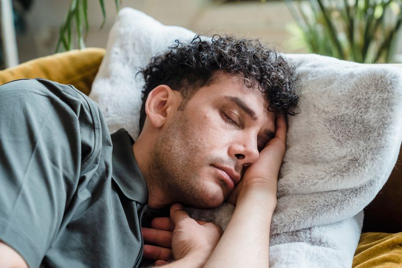take a nap2Your alarm rings very early in the morning and you open your eyes.…play a musical instrumentread booksdo gardeningplay computer gamescook a mealtake a napchat on social mediago fishingwake up earlycycle through the countrysidego joggingstay up until midnight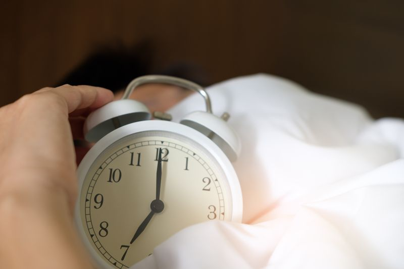wake up early3You are still awake at twelve o'clock at night, watching a film or studying.…do gardeningwake up earlygo joggingcook a mealstay up until midnightread booksplay a musical instrumentplay computer gamescycle through the countrysidechat on social mediago fishingtake a napstay up until midnight4You run slowly around the park to keep your body healthy.…play computer gameschat on social mediawake up earlygo jogginggo fishingtake a napcook a mealstay up until midnightdo gardeningread bookscycle through the countrysideplay a musical instrument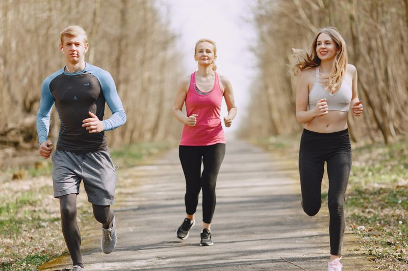go jogging5You stand in the kitchen and make dinner for your family.…stay up until midnightwake up earlyplay computer gamesgo fishingcook a mealcycle through the countrysidechat on social mediaread booksgo joggingtake a napdo gardeningplay a musical instrument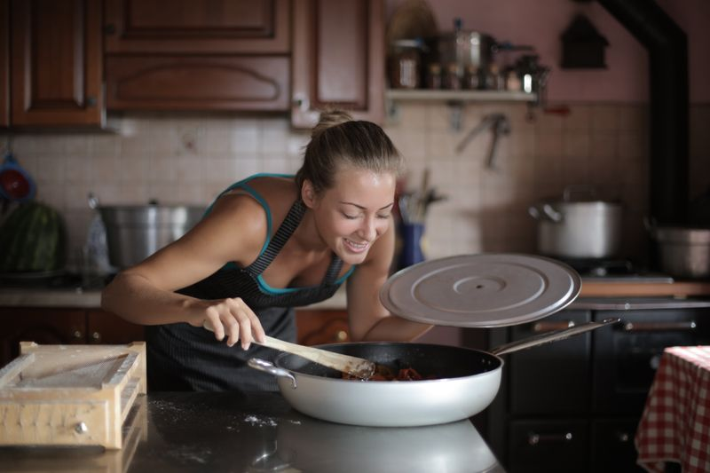cook a meal6You turn the pages of a novel in bed before you turn off the light.…play a musical instrumentgo fishingplay computer gamescycle through the countrysideread bookscook a mealgo joggingdo gardeningchat on social mediastay up until midnightwake up earlytake a napread books7You practise the guitar or the violin for an hour every evening.…stay up until midnightplay a musical instrumentread bookswake up earlytake a napchat on social mediacycle through the countrysidego fishingdo gardeningplay computer gamesgo joggingcook a meal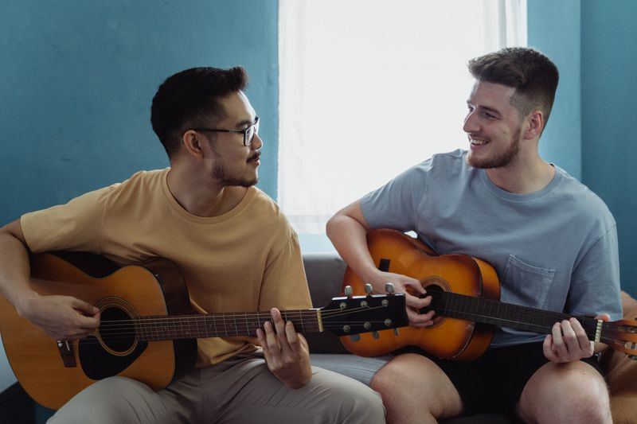play a musical instrument8You ride a bike past fields and small villages on a sunny Sunday.…do gardeninggo fishingcook a mealcycle through the countrysidewake up earlygo joggingplay computer gamesread booksstay up until midnightplay a musical instrumentchat on social mediatake a nap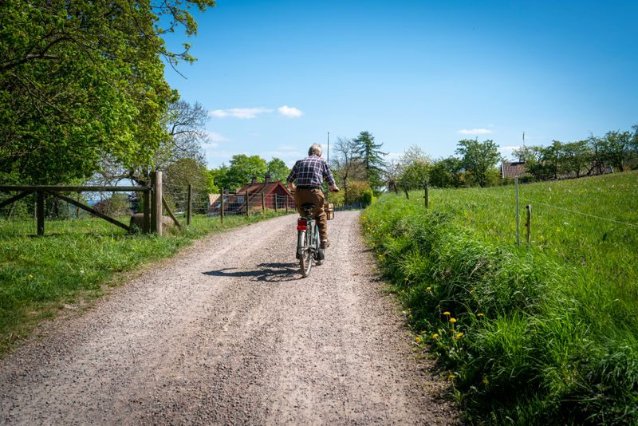cycle through the countryside9You send messages and photos to friends on your phone apps.…stay up until midnightplay a musical instrumentgo fishingwake up earlycook a mealcycle through the countrysidechat on social mediaread bookstake a napplay computer gamesdo gardeninggo jogging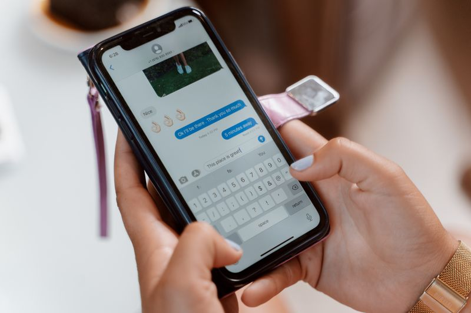chat on social media10You sit at a screen and move a character with a controller.…chat on social mediaplay a musical instrumentwake up earlygo fishingtake a napcycle through the countrysidedo gardeningplay computer gamescook a mealgo joggingread booksstay up until midnight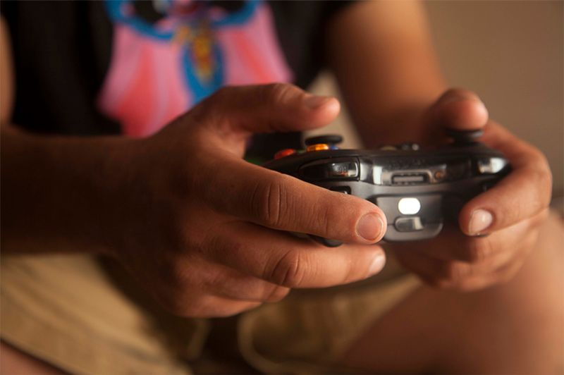play computer games11You sit by a river all morning and wait for a fish to bite.…stay up until midnightplay a musical instrumenttake a napcycle through the countrysidechat on social mediago fishingread booksdo gardeningwake up earlygo joggingcook a mealplay computer games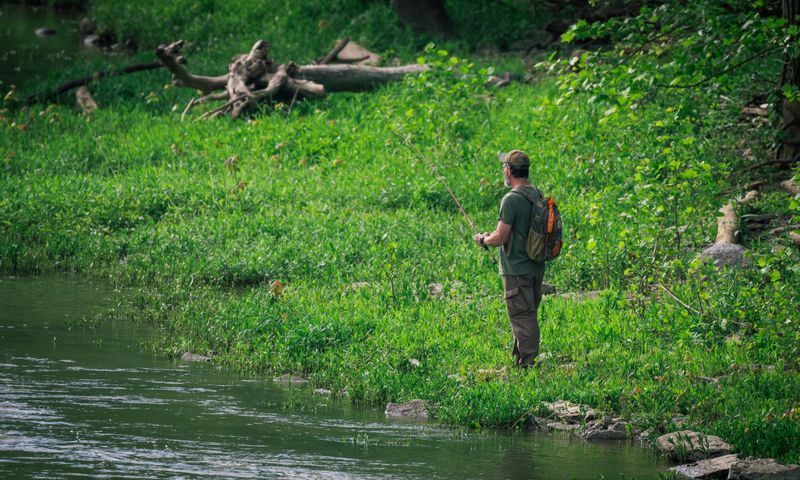go fishing12You plant vegetables and water them in the garden every morning.…stay up until midnightplay computer gamescook a mealwake up earlychat on social mediago fishinggo joggingtake a napplay a musical instrumentread bookscycle through the countrysidedo gardening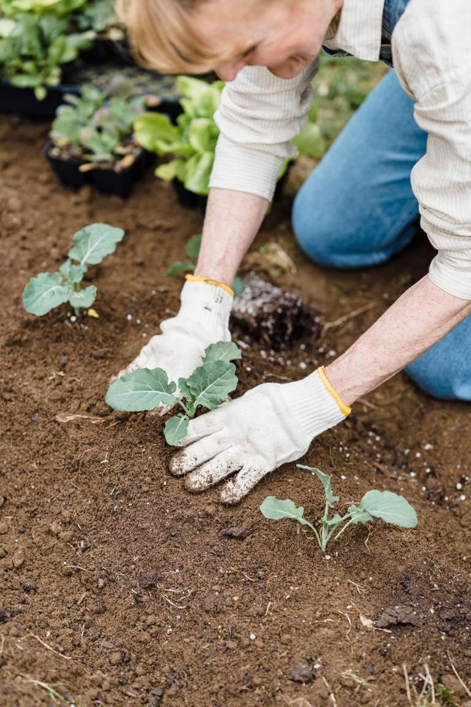do gardeningCheckAnswer keyReset Lead-in 2 · Listening warm-up · Track 1⏱ ~8 minA · Before listening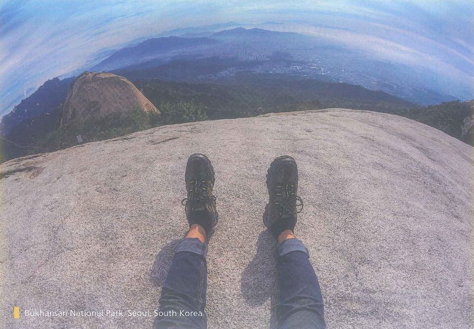Describe the place in the photo. Where do you think it is? — pick a suggestion —on top of a mountainin a national parknear a big cityon a huge rockfar away from any townHow do you think the person feels? — pick a suggestion —relaxedtired after a long climbhappy and freea bit scaredproudB · Listen to Track 12:00Listen once⏹🎧 Track 1 · SB p. 9 ex 2 — a description of the place in the photo (56")ListenChoose the correct answer1 · Where is Bukhansan National Park?A In the countryside, a long way from any city.B In the city of Seoul, South Korea.C On an island south of Japan.2 · How many people visit the park every year?A About ten million.B About one million.C About forty-five thousand.3 · Why do people in Seoul go walking there at weekends?A Because it's the quickest way to the city centre.B Because most of them work in the park.C Because it's a good way to relax.CheckAnswer keyReset Speak in pairs · SB p. 10 ex 2–3⏱ ~5 min3:00Speak in pairs 3'⏹SB p. 10 ex 2–3 · Speak in pairsInterview your partner with four questions from the sleep questionnaire, then compare your answers.1 · Do you often feel tired?— pick a suggestion —No, I never feel tired during the day.I sometimes feel tired after a long day.All the time! I'm always ready for bed.Only in exam weeks.2 · How many hours do you usually sleep at night?— pick a suggestion —Between seven and eight hours.More than nine.Fewer than six.About five on weekdays and nine at the weekend.3 · How often do you wake up in the middle of the night?— pick a suggestion —I never wake up before morning.Once, but I fall asleep again quickly.Two or three times a night.Only when I'm worried about an exam.4 · Are you often tired during the day?— pick a suggestion —No, I'm never tired in class.Sometimes, so I take a nap after lunch.Always! I study late and get up early.Only on Mondays.A: Do you often feel tired?B: Not usually, but before exams I burn the midnight oil and feel terrible the next day.A: How many hours do you usually sleep at night?B: About six. I know I need a good night's sleep, but our first lecture starts at seven.A: How often do you wake up in the middle of the night? Do you ever lie awake for hours?B: Hardly ever. I fall asleep again in a few minutes.A: Are you often tired during the day?B: Sometimes, after lunch. That's why I take a twenty-minute nap before afternoon classes. How many words do you have for each of the 4 groups?⏱ ~4 min4:00Brainstorm 4'⏹For each group, type every English word or phrase you already know.Group 1Open group →Sport and activities with do / play / goWhich sports and activities go with do, play or go?Word hintsdo yoga · do karate · do gardening · play tennis · play football · play the piano · go fishing · go swimming · go cycling · work out · keep fit · take up · be keen on · go for a run0Group 2Open group →Free time and habitsHow do you usually spend your time when you're not studying?Word hintschat on social media · cook a meal · read books · watch videos · go clubbing · eat out · play board games · go on holiday · unwind · a couch potato · socialize · a creature of habit · make time for · catch up with friends0Group 3Open group →Everyday routines and sleepWhat do you do every day, from the moment you wake up until you fall asleep?Word hintsget up · wake up early · take a break · get home late · work long hours · feel tired · fall asleep · stay up · take a nap · go to bed · a sleepless night · sleep-deprived · suffer from insomnia · a hectic schedule · a lie-in · a good night's sleep · a daily routine0Group 4Open group →A long and healthy lifeWhy do some people live to be a hundred?Word hintscentenarian · diet · lifestyle · family life · traditional · the younger generation · stressful · life expectancy · the secret of longevity · live to a ripe old age · a balanced diet · processed food · cut down on · lead an active life · boost the immune system00words so far
Sheet 2 / 11 · 4 periods · self-studyRoadmap Key knowledge for each part of the testReadingFind the six secrets of a long life on Okinawa, then read why young doctors need to sleep.Group 4Group 3→ Sheet 5ListeningComplete notes on a radio interview, then listen again for the facts about Sardinia.Group 4Listening warm-up Sheet 1→ Sheet 6Speaking · Part 1Your daily routine, your sleep, your free time and what you're doing these days.Group 1Group 2Group 3Chunks 1–4→ Sheet 7Speaking · Part 2Describe a habit you have, your favourite sport, a medical problem or a park you like.Group 1Group 2Group 3Group 45-step frame→ Sheet 7Speaking · Part 3Sleep and study, lifestyles then and now, family life and why some people live longer.Group 4Chunks 5–6Chunks 7–8→ Sheet 7Writing · sentences & paragraphAdverbs of frequency in the right place, present simple or present continuous, and lifestyle collocations.GrammarSentence upgrades→ Sheet 8 Plan for 4 periods (180 minutes)Period 1 · 45' · into the topic, everyday routines2'Aims of the lesson (Sheet 1)8'Lead-in 1: guess 12 routines and activities with a dropdown8'Lead-in 2: describe the photo + Track 1, Bukhansan National Park (3 MCQ)5'Speaking in pairs: the sleep questionnaire (SB p. 10 ex 2–3)4'Diagnostic: type the words you know for 4 groups18'Group 3 · everyday routines (SB p. 10 ex 1), 8'Track 3 · /s/, /z/ or /ɪz/ → Pronunciation 1–2, 5'Exercise 2 (word families sleep / life), 5'Period 2 · 45' · frequency, habits, sleep15'Adverbs of frequency (Sheet 4 cards 1–3) and Exercise 5Put the adverb in the right place (SB p. 11 ex 9–10)12'Group 2 · free time and habitsPairs: How often do you …? with the ideas in SB p. 11 ex 1118'Exercise 4 (the article The secrets of sleep, SB p. 11 ex 5), 5'Reading B · sleep and young doctors (6 MCQ), 8'Start your My Lifestyle Dossier (Sheet 3): 7 notes on one daily habit, 5'Period 3 · 45' · reading and listening, present continuous15'Before reading: who is the oldest person you know? (SB p. 12 ex 1), 1'Reading A · "The Secrets of a Long Life" · 10 MCQ · time it 9'Round 3: discuss the 2 questions in pairs, 2'10'Group 1 · do, play and go (SB p. 12 ex 3–5)Exercise 3 (verb + noun collocations)12'Track 5 · Listening A (fill 6 gaps) → listen again · Listening B (6 MCQ)After listening: 3 tasks in pairs (SB p. 13 ex 8), 4'8'Present simple or continuous? (Sheet 4 cards 4–6) and Exercise 6Before next period: read the chunk bank (Sheet 4), functions 5–8Period 4 · 45' · speaking practice8'Write pairs of questions and ask them (SB p. 13 ex 13–14), 5'Exercise 1 (sort 12 phrases), 3'10'Speaking Part 1: 10 questions, 30" each, in pairs12'Part 2: 1' preparation + 2' speaking, cue A or BYour partner counts the collocations and ticks the checklist10'Part 3: groups of 3, 3 questions each, 5-step frame5'Quiz, first 5 questions (Sheet 10), books closedSet homeworkThen four extra 45-minute periods, one per vocabulary group, follow the class routes in Sheet 11HomeworkWriting 1: 4 sentence-building items + 4 sentence upgrades (Sheet 8) + 5 sentences about how often you do your daily habit (Sheet 4)Writing 2: a 120–150-word paragraph about a habit you have, your favourite sport or a medical problem you have hadExercises 7 · 8 · 9 · 10 (Sheet 9), finish your My Lifestyle Dossier (Sheet 3) and read the chunk bank and the B1 → B2 table (Sheet 4)Quiz on day 1 · 3 · 7 (Sheet 10) and add 10 phrases to your personal notebook How to learn a group of words1Read the Core words aloudWords from the book — you've already met themCheck stress: GARdening · EXercise · centeNARian2Choose 4 B2 phrasesDon't learn the whole tableChoose phrases you'll actually use to describe one of your own daily habits3Cover the meaning columnLook at the English phrase → say the meaningLook at the meaning → say the phrase4Write one sentence about yourselfAbout your morning routine, your sleep habits, your weekly sportUse 2 of the phrases you just chose5Say it in 30 secondsTime yourself, say that sentence + 2 moreRecord it, listen back
Sheet 3 / 11 · 4 word groups · Core words SB p. 9–13 · 34 B2 phrases · My Lifestyle DossierLifestyle vocabulary Group 1 · Sport and activities with do / play / goCore · SB p. 12 ex 3–4🧘DOdo + an activity that does not end in -ingdo + work or jobs (do homework)do yoga (v + n)/ˈjəʊɡə/do a set of exercises for the body and the mindMy mother does yoga three times a week.do karate (v + n)/kəˈrɑːti/do a Japanese fighting sportMy brother does karate. He's a black belt.do gardening (v + n)/ˈɡɑːdnɪŋ/look after a garden: plant, water and grow thingsOlder people on Okinawa do a lot of gardening.do homework (v + n)/ˈhəʊmwɜːk/do school or college work at homeI do my homework in the library after dinner.do exercise (v + n)/ˈeksəsaɪz/move your body to stay healthy and strongI do exercise for twenty minutes before breakfast.🎾PLAYplay + games and sports with a ballplay the + a musical instrumentplay tennis (v + n)/ˈtenɪs/play a game for two or four players with rackets and a ballMy brother plays tennis every Saturday morning.play football (v + n)/ˈfʊtbɔːl/play a game for two teams who kick a ballThe cadets play football on Friday afternoons.play cards (v + n)/kɑːdz/play games with a set of small pieces of stiff paperMy grandparents play cards with their neighbours.play the piano (v + n)/piˈænəʊ/make music on a large instrument with black and white keysShe plays the piano to relax before exams.🏊GOgo + an activity that ends in -inggo fishing (v + n)/ˈfɪʃɪŋ/try to catch fish as a sport or for foodPeople on Okinawa go fishing and eat what they catch.go cycling (v + n)/ˈsaɪklɪŋ/ride a bike for exercise or pleasureWe go cycling in the hills twice a month.go swimming (v + n)/ˈswɪmɪŋ/move through water for exercise or funI go swimming before breakfast in the summer.go hiking (v + n)/ˈhaɪkɪŋ/go for long walks in the mountains or the countrysideIn Seoul, many people go hiking in Bukhansan at weekends.●go jogging●go running●go shopping●go surfing●go camping●play basketball●a team sport●do sport●do nothing●do aerobics●do athletics●do the gardeningUpgrade · B2Keeping fitwork outtrain the body by doing physical exerciseI work out in the gym for forty minutes after classes.keep fit/fɪt/stay healthy and strong by doing exerciseCycling to the hospital helps me keep fit.Starting and loving a sporttake upstart doing a new sport or hobbyMy grandfather took up swimming when he was sixty.be keen on/kiːn/like something or be very interested in itOur anatomy teacher is very keen on running.Collocationsdo regular exercise/ˈreɡjələ(r)/exercise often, for example every day or every weekPatients who do regular exercise usually sleep better.go for a rungo out to run for exerciseI go for a run along the river before breakfast.warm upprepare your body for sport with gentle exercisesAlways warm up for ten minutes before a match. Group 2 · Free time and habitsCore · SB p. 9 ex 3cycle through the countryside/ˈsaɪkl/ride a bike in the area outside towns and citiesAt weekends we cycle through the countryside near the city.chat on social mediatalk to friends in an informal way on websites and appsShe chats on social media until late at night.cook a meal/miːl/prepare food such as breakfast, lunch or dinnerMy roommates and I cook a meal together on Fridays.go clubbing/ˈklʌbɪŋ/go to nightclubs to danceI don't often go clubbing because I get up early.go for long walks/wɔːk/walk for a long time, usually for pleasureMy grandfather goes for long walks by the lake.play a musical instrument/ˈɪnstrəmənt/make music on something like a guitar or pianoPlaying a musical instrument helps me relax after classes.eat outhave a meal in a restaurant, not at homeWe eat out about once a month.take public transport/ˌpʌblɪk ˈtrænspɔːt/travel by bus, train or other shared transportI usually take public transport to the hospital.check your phone for messages/tʃek/look at your phone to see if anyone has writtenDoctors on duty check their phones for messages every few minutes.play board games/ˈbɔːd ɡeɪm/play games such as chess on a special boardOn rainy evenings we play board games in the dormitory.go on holiday/ˈhɒlədeɪ/travel somewhere to rest and enjoy yourselfMy family goes on holiday to the beach twice a year.spend time with friends/spend/be together with friends for a period of timeDuring exam weeks I rarely spend time with friends.Upgrade · B2Relaxing and going outunwind/ˌʌnˈwaɪnd/relax after a period of work or worryAfter a long shift, I unwind with some music.a couch potato/ˈkaʊtʃ pəteɪtəʊ/a person who spends a lot of time sitting and watching TVMy brother is a real couch potato at the weekend.socialize/ˈsəʊʃəlaɪz/meet and spend time with other people in a friendly wayMedical students have little time to socialize in exam season.Habitsget into the habit of/ˈhæbɪt/start doing something regularlyI got into the habit of drinking water before every lecture.break the habitstop doing something you have done regularly for a long timeIt took him a year to break the habit of smoking after meals.a creature of habit/ˈkriːtʃə(r)/a person who always does the same things in the same wayMy father is a creature of habit: he has the same breakfast every day.Collocationsmake time forfind time to do something although you are busyEven busy doctors should make time for exercise.a busy social lifea life with a lot of meetings and fun with friendsShe has a busy social life, but she never misses a lecture.catch up with friendsmeet friends and find out what has happened in their livesOn Sundays I catch up with friends from my home town. Group 3 · Everyday routines and sleepCore · SB p. 10 ex 1get upget out of bed after you wake upOn weekdays I get up at half past five.wake up early/weɪk/stop sleeping before most people doNight-shift nurses rarely wake up early on their day off.work long hours/ˈaʊə(r)/work for many hours every dayJunior doctors often work long hours in the emergency department.take a break/breɪk/stop working or studying for a short time to restLet's take a break after the second lecture.get home late/həʊm/arrive at the place where you live late in the eveningDuring exam weeks I get home late from the library.feel tired/ˈtaɪəd/need to rest or sleepI always feel tired after a long day on the wards.watch TV/ˌtiː ˈviː/look at programmes on televisionMy parents watch TV after dinner every evening.stay up until midnightgo to bed at twelve o'clock at night or laterI hardly ever stay up until midnight on a school night.go to bed/bed/get into bed so that you can sleepMost of my roommates go to bed at about eleven.fall asleep/əˈsliːp/start to sleepHe was so tired that he fell asleep in the anatomy lecture.take a nap/næp/have a short sleep during the dayI take a twenty-minute nap after lunch.Upgrade · B2When you don't sleep wellsleep-deprivednot having had enough sleep for some timeSleep-deprived doctors are more likely to make mistakes.a sleepless night/ˈsliːpləs/a night when you cannot sleep at allI had a sleepless night before my first clinical exam.suffer from insomnia/ɪnˈsɒmniə/be unable to sleep well, often for a long timeMany night-shift nurses suffer from insomnia on their days off.A busy timetablea hectic schedule/ˈhektɪk/a timetable that is very busy, with no time to restFirst-year medical students have a hectic schedule of lectures and lab work.burn the midnight oilstudy or work until late at nightBefore the pharmacology exam, the whole class burnt the midnight oil.a lie-in/ˌlaɪ ˈɪn/a time when you stay in bed later than usual in the morningOn Sunday I have a lie-in until nine.Collocationsa good night's sleepa night when you sleep well and long enoughMemory works best after a good night's sleep.get enough sleepsleep for as many hours as your body needsTeenagers who get enough sleep concentrate better in class.a daily routine/ruːˈtiːn/the things you do at the same time every dayPatients recover faster when they keep a regular daily routine. Pronunciation 1 · -s endings: /ɪz/ or not? · Track 3🎧 Track 3 · SB p. 11 ex 6 — listen to the endings, then listen again and repeat (47")Pronunciation 1Listen and sort 10 verbs: does the ending add a syllable?CheckAnswer keyResetSay them again: after /s/, /z/, /ʃ/, /tʃ/ or /dʒ/ the ending is an extra syllable: watch-es, danc-es Pronunciation 2 · /s/ or /z/?Pronunciation 2Is the -s in bold /s/ or /z/?1 · She talks to her grandmother every evening.A /s/B /z/2 · He plays football on Fridays.A /s/B /z/3 · My roommate reads in bed before he sleeps.A /s/B /z/4 · Exercise makes me feel awake.A /s/B /z/CheckAnswer keyResetAfter a voiceless sound (/p/, /t/, /k/, /f/) it is /s/; after a voiced sound it is /z/ Group 4 · A long and healthy lifeCore · SB p. 12–13 · Track 4a centenarian/ˌsentɪˈneəriən/a person who is 100 years old or olderOkinawa is famous for its high number of centenarians.grow your own fruit and vegetables/ɡrəʊ/plant and look after the food you eat yourselfMy grandparents grow their own fruit and vegetables.family lifethe time you share and the way you live with your familyIn Sardinia, family life is very important.a traditional society/trəˈdɪʃənl/a society that keeps old customs and ways of livingDo people live longer in traditional societies?the younger generation/ˌdʒenəˈreɪʃn/the young people of a family or a societyThe younger generation are eating more burgers and chips.diet/ˈdaɪət/the kind of food that a person usually eatsA diet with lots of vegetables protects the heart.lifestyle/ˈlaɪfstaɪl/the way a person lives and spends their timeDoctors often ask patients about their lifestyle.stressful/ˈstresfl/making you feel worried and under pressureNight shifts in the emergency room are very stressful.seaweed/ˈsiːwiːd/a plant that grows in the sea; some kinds are eatenSeaweed is part of everyday food on Okinawa.Upgrade · B2Living longerlife expectancy/ˈlaɪf ɪkspektənsi/the number of years a person is likely to liveLife expectancy in Vietnam is now over seventy-three years.the secret of longevity/lɒnˈdʒevəti/the best way to live a long lifeScientists study the diet of Okinawa to find the secret of longevity.live to a ripe old agelive until you are very oldMy great-grandmother lived to a ripe old age in her village.Eating wella balanced diet/ˈbælənst/a diet with the right amounts of different kinds of foodA balanced diet gives students energy for long days.processed food/ˈprəʊsest/food changed in a factory, often with added salt, sugar or fatToo much processed food raises blood pressure.cut down oneat, drink or use less of somethingThe doctor told him to cut down on salt.Collocationslead an active life/ˈæktɪv/live in a way that keeps you busy and movingThe islanders lead an active life until their nineties.a healthy lifestylea way of living that is good for your body and mindDoctors should be good examples of a healthy lifestyle.boost the immune system/buːst/make the body better at fighting illnessEnough sleep and fresh food help to boost the immune system. My Lifestyle DossierThe daily habit you chooseHow often · whenWhere · who withWhy · how it startedFeel · how it makes you feelHealth · what it does for your body and mindThese days · what is changing now
Sheet 4 / 11 · Adverbs of frequency · present simple and continuous · functional chunks · B1 → B2 upgradesGrammar & sentence patterns Grammar for this unitAdverbs and expressions of frequency · SB p. 11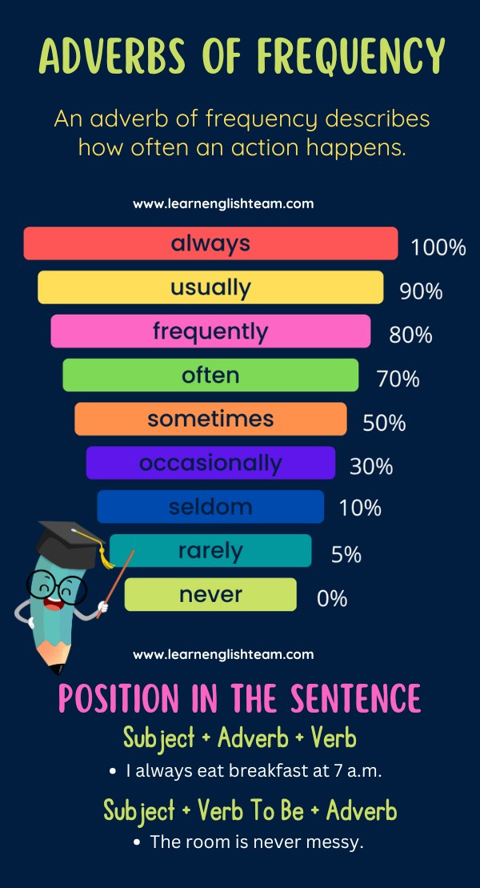The chart lists more adverbs than this lesson teaches. In this lesson hardly ever sits with rarely, near the bottom of the scale. With an auxiliary the adverb goes after it: Do you often …?📍Form · where it goesadverb before the main verb: I often wake up at night.adverb after the verb be: She's usually late.with an auxiliary (do, have, will) it goes after the auxiliary: Do you often …? · I don't often …I always get up at half past five.We are never late for the ward round.Do you often take a nap after lunch?📊Meaning · how oftenfrom 100% to 0%: always → usually → often → sometimes → rarely / hardly ever → neveran expression gives the exact number: every day, once a week, twice a year, two or three times a nightthey answer the question How often …?She wakes up two or three times a night.My brother always plays tennis on Saturday mornings.⚠️Pitfallsan expression of frequency goes at the start or the end, never before the verb: I every day take a bus → I take a bus every dayusually, often, sometimes can also start a sentence, for emphasisalways and never cannot start a sentence: Always I get up earlyWe eat out at a restaurant about once a month.Sometimes I sleep until midday at the weekend.Present simple and present continuous · SB p. 10, 13🧱Formpresent simple: I / you / we / they + verb · he / she / it + verb-s / -es (sleeps, watches, goes)present simple negatives and questions: don't / doesn't · Do / Does + base verbpresent continuous: am / is / are (not) + verb-ingpresent continuous questions: Am / Is / Are + subject + verb-ingShe doesn't sleep well before exams.Are you working on the wards this month?🎯Meaning · when to use itpresent simple = habits and routinespresent simple = things that are always or generally truepresent continuous = an action in progress at the moment of speakingpresent continuous = something happening around now, not necessarily at this momentEvery Sunday the whole family eats a big meal together.He's speaking to us right now on the phone.Young people are moving to the city.⚠️Contrast and pitfallstime words help: usually, every week → simple · now, at the moment, these days → continuousstate verbs (like, want, know, see) stay simple: I'm wanting a nap → I want a napno -s after does / doesn't: Does she sleeps …? → Does she sleep …?I usually cycle to the academy, but this week I'm walking.She wants to sleep now.A frame worth using in the examI usually … , but these days I'm … because … .I usually go to bed at eleven, but these days I'm staying up until one because I'm revising for my anatomy exam.WriteWrite one true sentence about yourselfReset Frequency · write about your daily habitOpen your My Lifestyle Dossier again (→ Sheet 3). Write 5 sentences that say how often you do things connected with that same daily habit.Write5 sentences with adverbs of frequency about your daily habitSentence 1Sentence 2Sentence 3Sentence 4Sentence 5ResetSwap with a partner: is every adverb in the right place? 8 functions · 24 chunks1 · Talking about routinesI usually …Every morning, …On weekdays, …On weekdays, I usually get up at half past five.2 · Saying how oftenonce or twice a weektwo or three times a dayhardly everI go swimming once or twice a week, but I hardly ever eat out.3 · Asking about habitsHow often do you …?Do you ever …?Are you often …?How often do you check your phone for messages?4 · Talking about now and about changesAt the moment, …These days, …More and more …These days, more and more old people are playing computer games.5 · Giving an opinionIn my view, …As far as I'm concerned, …I'm convinced that …In my view, sleep is part of studying, not a break from it.6 · Giving a reasonThe main reason is that …This is because …That's why …The main reason is that tired students forget what they learn.7 · ConcedingAdmittedly, …Of course, …Even so, …Admittedly, exams are stressful. Even so, a regular routine helps.8 · ConcludingOn balance, …All things considered, …So, all in all, …On balance, the islanders' secret is a simple, active routine. B1 → B2 sentence upgrades (9 patterns)B1B2I study until very late before exams.Before exams, I often burn the midnight oil.I don't sleep enough during the week.I'm sleep-deprived for most of the week.I couldn't sleep at all before the test.I had a sleepless night before the anatomy test.My week is very busy this term.I have a hectic schedule this term.I relax with music after classes.I unwind with music after classes.I started running every morning, and now I always do it.I got into the habit of running every morning.I started doing yoga last month.I took up yoga last month.People in Okinawa live for a very long time.People in Okinawa have a very high life expectancy.I eat less fast food now.These days I'm cutting down on processed food. 5-step answer frameSample question: "Should medical students sleep less so that they can study more?"1PointNo, I don't think they should,2Whybecause tired students forget what they learn and make careless mistakes.3ExampleDuring exam weeks, for example, many of my classmates burn the midnight oil and then fall asleep in lectures.4CounterAdmittedly, there are weeks when there is simply too much to learn.5EvaluationOn balance, though, a good night's sleep is part of studying, not a break from it.Where to use thisPart 1: Point + Why (+ Example) — 2–3 clauses.Part 2: follow the cue card's 4 points, each one = Point + Why or Example.Part 2: finish with one Evaluation sentence.Part 3 and the paragraph: use all 5 steps — never skip Counter and Evaluation. 6 common errorsErrorCorrectionRememberHe go to the gym every day.He goes to the gym every day.he / she / it + verb-s / -es in the present simple.She doesn't sleeps well.She doesn't sleep well.doesn't + base verb, with no -s.I go always to bed at midnight.I always go to bed at midnight.Adverbs of frequency go before the main verb.I every day take a nap.I take a nap every day.Expressions of frequency go at the end (or the start) of the sentence.I'm wanting a nap right now.I want a nap right now.State verbs such as want, like, know are not used in the continuous.I play yoga twice a week.I do yoga twice a week.do yoga, karate, gardening · play ball games · go + -ing.
Sheet 5 / 11 · 4-option MCQ · passage fixed on the leftReading0 checked Reading A · The Secrets of a Long Life · SB p. 12Before you read · SB p. 12 ex 1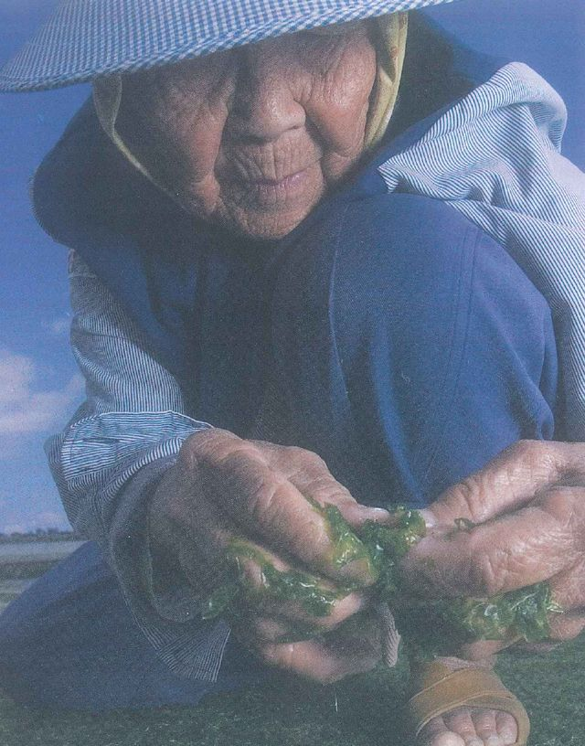Who is the oldest person you know? How old is he or she? — pick a suggestion —my grandfather, he's 88my great-grandmother, she's 95an old neighboura patient my mother looks afterHow healthy is their lifestyle? — pick a suggestion —very healthy: he still plays badmintonshe eats a lot of vegetablesnot very: he smokesshe walks every morningThe Secrets of a Long Life🖍 HighlightClear highlight1The island of Okinawa in Japan has some of the oldest people in the world. It's famous for its high number of centenarians – men and women who live beyond one hundred years of age. Some of the reasons for their good health are that they:2go fishing and eat what they catch.3do a lot of gardening and grow their own fruit and vegetables.4go cycling and never drive when they can walk.5often spend time with friends. They meet at people's houses and play games.6rarely buy food from a supermarket.7do regular exercise, go swimming and lead active lives.Life Pre-Intermediate SB p. 12 · Unit 1b · 🎧 Track 41:00Skim + Scan 1'⏹Round 1Skim & Scan — a quick read before the MCQSkimSkim the whole article in 30 seconds.Scan 1Centenarians live beyond what age? Write the number in figures. Scan 2In which country is the island of Okinawa? CheckAnswer keyReset9:00Read + answer 9'Check in pairs 2'⏹🎧 Track 4 · SB p. 12 ex 2 — the article The Secrets of a Long Life (58")Round 2Choose the correct answer for 10 questions1 · What is the article mainly about?A How Japanese farmers grow fruit for supermarkets.B Why many people on one Japanese island stay healthy into very old age.C The best sports for older people who live in big cities.D How to plan a holiday on an island in the south of Japan.Your answer: — · Correct answer: —Why? The first paragraph names the island and its very old people, then the list gives the reasons for their good health.Evidence: Some of the reasons for their good health2 · Why is Okinawa famous?A Its beaches attract many tourists.B Its people eat a lot of fast food.C It has more hospitals than other islands.D A large number of its people reach the age of 100.Your answer: — · Correct answer: —Why? Okinawa is famous for its centenarians, so many of its people reach 100.Evidence: It's famous for its high number of centenarians3 · In paragraph 1, the word "centenarians" refers to people who …A are 100 years old or older.B work in a hospital.C were born on the island.D live alone in the countryside.Your answer: — · Correct answer: —Why? The dash explains the word: men and women who live beyond one hundred years of age.Evidence: men and women who live beyond one hundred years of age4 · Where does a lot of the islanders' fish come from?A A supermarket in the city.B Other islands nearby.C They catch it themselves.D Restaurants by the sea.Your answer: — · Correct answer: —Why? They go fishing and eat what they catch, so the fish comes from their own fishing.Evidence: go fishing and eat what they catch5 · What do the islanders grow in their gardens?A Food for their own meals.B Flowers to sell to tourists.C Trees for building houses.D Plants for traditional medicine.Your answer: — · Correct answer: —Why? They grow their own fruit and vegetables, which is food they eat themselves.Evidence: grow their own fruit and vegetables6 · How do the people of Okinawa usually travel short distances?A By car, even for short trips.B On foot or by bike.C By bus.D By motorbike.Your answer: — · Correct answer: —Why? They go cycling and never drive when they can walk.Evidence: go cycling · never drive when they can walk7 · What does paragraph 5 say about the islanders' social life?A They prefer to stay at home on their own.B They meet friends only at weekends.C They often go out with friends to cafes and restaurants in town.D They visit each other's homes and play games together.Your answer: — · Correct answer: —Why? They meet at people's houses and play games, so they visit each other's homes.Evidence: They meet at people's houses and play games8 · What can we infer from paragraph 6?A Supermarkets on the island are too expensive for most local families.B There are no shops on the island.C Most of the food they eat is fresh and comes from near home.D The islanders do not like cooking.Your answer: — · Correct answer: —Why? If they rarely buy food from a supermarket and grow or catch their own, their food is mostly fresh and local.Evidence: rarely buy food from a supermarket9 · What does the phrase "lead active lives" suggest about the islanders?A They are often ill.B They stay busy and keep moving every day.C They work as sports teachers at local schools.D They spend most days resting.Your answer: — · Correct answer: —Why? An active life is a life with a lot of movement and things to do.Evidence: lead active lives10 · According to paragraph 5, how often do the islanders spend time with friends?A Often.B Rarely.C Never.D Only once or twice a year.Your answer: — · Correct answer: —Why? The adverb of frequency in paragraph 5 is "often".Evidence: often spend time with friendsCheckAnswer keyReset Round 3 · Reading → Speaking — sample answers1The placeOkinawa, a Japanese island with many people over 100.2The habitsThey eat food they grow or catch, keep moving and see their friends.3The lessonSimple daily habits add up to a long, healthy life.1 · Which of the islanders' activities do you do? How often?See a sample answerPointI do two of them: I go cycling and I often spend time with friends. WhyI cycle to the academy every weekday, so I keep fit without paying for a gym. ExampleAnd on Saturday evenings I catch up with friends or we play board games in the dormitory.2 · Which Okinawan habit would be hardest for medical students to copy? Why?See a sample answerPointI think growing your own fruit and vegetables would be the hardest. WhyWe live in dormitories in the city and have a hectic schedule, so there's no land and no time. ExampleWe could still cut down on instant noodles and buy fresh food at the market twice a week. Reading B · Sleep: the lesson young doctors forgetSleep: the lesson young doctors forget🖍 HighlightClear highlight1Ask a group of first-year medical students how much they sleep, and you will hear some worrying answers. Many of them get home late from the library, stay up until one or two in the morning and wake up early for a seven o'clock lecture. Five hours a night is normal for them, and some are even proud of it.2The problem is that most of them are sleep-deprived without knowing it. Adults need seven to nine hours of sleep a night, and young people often need a little more. After a few short nights in a row, the brain starts to slow down. Students feel tired in the afternoon, forget what they read the day before and find it hard to concentrate in class.3Exams make things worse. Before a big test, many students burn the midnight oil, and some spend a whole night at their desk with coffee and a pile of notes. It feels useful, but research points the other way: memory works best after a good night's sleep, because the brain sorts and stores new information while we are asleep.4Later in their careers, doctors often work night shifts, so good habits learned early really matter. Sleep experts give simple advice. Go to bed and get up at about the same time every day, even at the weekend. Keep your phone out of the bedroom. If you feel tired after lunch, take a short nap of twenty minutes, not two hours.5None of this is easy with a hectic schedule of lectures, lab work and hospital visits. But a student who gets enough sleep usually learns faster and makes fewer mistakes. After a sleepless night, everyone is a worse student, and one day, a worse doctor.8:00Read + answer 8'⏹FindFind the sleep phrase in the passage1sleep-deprived …Paragraph 4Paragraph 2Paragraph 3Paragraph 5Your answer: — · Correct answer: —Paragraph 2 explains that students sleep far less than they need, often without noticing.Evidence: most of them are sleep-deprived without knowing it2burn the midnight oil …Paragraph 4Paragraph 3Paragraph 5Paragraph 2Your answer: — · Correct answer: —Paragraph 3 describes students who study until late at night before a big test.Evidence: many students burn the midnight oil3a good night's sleep …Paragraph 4Paragraph 3Paragraph 5Paragraph 2Your answer: — · Correct answer: —Also in paragraph 3: memory works best after a full night of sleep.Evidence: memory works best after a good night's sleep4a hectic schedule …Paragraph 5Paragraph 2Paragraph 3Paragraph 4Your answer: — · Correct answer: —Paragraph 5 lists the busy timetable: lectures, lab work and hospital visits.Evidence: a hectic schedule of lectures, lab work and hospital visitsCheckAnswer keyResetReading BChoose the correct answer for 6 questions1 · What is the main purpose of the passage?A To describe the daily timetable of lectures at a typical medical school.B To explain why coffee is bad for students.C To compare how doctors sleep in different countries.D To show why young medical students should take sleep seriously.2 · According to paragraph 2, what happens after several short nights?A Students start to sleep more deeply.B Students become better at remembering facts.C Students find it harder to focus and remember.D Students stop feeling hungry.3 · In paragraph 3, the phrase "burn the midnight oil" means …A study or work until very late at nightB cook dinner very lateC go to bed before midnightD drink coffee to stay awake in the morning4 · What does the writer suggest about studying all night before an exam?A It is the best way to remember a lot of facts.B It probably does more harm than good.C It is only useful for first-year students.D It is necessary for difficult subjects like anatomy.5 · Which piece of advice is NOT in paragraph 4?A Go to bed at a regular time.B Leave your phone in another room at night.C Keep naps short.D Drink warm milk before bed.6 · What is the writer's main point in paragraph 5?A Students should drop some of their courses.B Hospitals should stop asking young doctors to work night shifts at all.C Enough sleep makes students better learners and, later, better doctors.D Coffee can replace a few hours of sleep.CheckAnswer keyReset
Sheet 6 / 11 · Part 3 note completion · Part 4 multiple choiceListening0 checked Listening A · Track 5 · Complete the notesBefore you listen · SB ex 6–7Why do you think some people live much longer than others? Is it their diet, their family or something else?🎧 Track 5 · SB p. 13 ex 6–7 — a radio interview with photographer David McLain (2'03")0:45Read the task 45"Listen once⏹Listening AComplete the notes — choose the word or number for each gapIn search of a long life: SardiniaDavid McLain visits places with many people aged (1) …a hundredninetyeighty and over.At the moment he is working on the island of (2) …SicilyOkinawaSardinia.In Sardinia, men live to the same (3) …heightageweight as women.Every (4) …SaturdaySundayevening, the whole family eats a big meal together.The younger generation are eating more chips and (5) …sweetsburgerspizza.Young people are moving to the (6) …countrysidecoastcity, so they do less exercise.CheckAnswer keyReset Listening B · Track 5 · Choose the answer2:10Listen again⏹Listening BListen a second time · choose the correct answer1 · What is David McLain's job?A He's a doctor who studies old age.B He's a photographer.C He's a radio presenter.2 · Where is David during the interview?A In the radio studio with the presenter.B At home in the USA.C On the phone from Sardinia.3 · Why is Sardinia an interesting place for David?A Men there live as long as women.B It has more doctors than other islands in Europe.C Its people never eat meat.4 · According to research, in countries where people live longer …A people work fewer hours.B the family is important.C people go to the gym a lot.5 · What is changing in Sardinia?A Young people are eating less healthy food and moving less.B Old people are moving to the city.C Families are eating more meals together.6 · How does David feel about Sardinia's future?A He is sure that nothing will change there.B He thinks people there will soon live even longer.C He wants to see what will happen in the next twenty or thirty years.CheckAnswer keyResetAudioscript · Track 5Presenter: No one knows exactly the reason why some people live longer than others. Why are they so healthy? Is it their diet? Do they go to the gym more than other people? Well, one man is trying to answer these questions and that man is photographer David McLain. He's currently travelling to different places around the world with large numbers of people aged a hundred and over and asking the question: Why are they so healthy? At the moment he's working on the island of Sardinia in Italy and he's speaking to us right now on the phone. David, thank you for joining us today.David: Hello.Presenter: So, first of all, tell us why you decided to visit Sardinia.David: Well, Sardinia is an interesting place because men live to the same age as women. That isn't normal for most countries. Men normally die younger.Presenter: And does anyone know the reason why people live longer in Sardinia?David: There are different ideas about this. One explanation is that the family is so important here. Every Sunday, the whole family eats a big meal together. Research shows that in countries where people live longer, the family is important.Presenter: I see. So, do you think people live longer in traditional societies?David: That's an interesting question. Sardinia is quite a traditional place but, even here, the younger generation are eating more food like chips and burgers. Also young people are moving to the city, so they are doing less exercise because of their lifestyle. It'll be interesting to see what happens in Sardinia in the next twenty or thirty years … After listening — lifestyles in Sardinia and in your countryAfter listening · SB ex 81 · Compare Sardinia with your home townSee a sample answerIn my home town, many families still eat together on Sunday, just like in Sardinia. My grandparents lead an active life: they get up at five, work in the garden and walk to the market. But my cousins in the city eat a lot of processed food and spend hours on their phones.2 · How traditional is your country?See a sample answerVietnam is still quite traditional. Three generations often live in one house, and old people rarely live alone. Even so, things are changing fast: more and more young people are moving to big cities, and many of them have a hectic schedule and no time to cook.3 · Is your own lifestyle changing?See a sample answerYes, it is. At the moment I'm living in a dormitory, so I eat in the canteen and I'm sleeping less than at home. So I'm trying to stay healthy: I go for a run three times a week and I'm cutting down on energy drinks.
Sheet 7 / 11 · Part 1 interview · Part 2 long turn from the speaking-test bank · Part 3 discussionSpeaking Part 1 · 10 personal questions — 30 seconds each0:3030"45"⏹Answer = Point + Why (+ Example).1 · What time do you usually get up on weekdays?Suggested answerPointAt about half past five, because our first lecture starts at seven. WhyI'm not a morning person, but I got into the habit of setting two alarms in my first month here.2 · How many hours do you sleep on a school night?Suggested answerPointUsually about six, which isn't really enough. WhyI know I need a good night's sleep, but in exam weeks I'm often sleep-deprived because I study until midnight.3 · Do you ever take a nap during the day?Suggested answerPointYes, almost every day after lunch, usually on a bench in the library garden. WhyTwenty minutes is enough: it helps me unwind and I feel awake again for the afternoon practical.4 · What do you usually do in your free time?Suggested answerPointOn weekday evenings I just read or play the guitar. ExampleAt the weekend I catch up with friends: we eat out once or twice a month or cycle to the lake.5 · How often do you do exercise?Suggested answerPointOnce or twice a week, but I'd like to do more. WhyI work out in the academy gym after classes, because I want to keep fit for the physical tests.6 · Are you reading any good books at the moment?Suggested answerPointYes, I'm reading a book about the science of sleep. WhyI'm really keen on it, because it explains why a sleepless night before an exam is such a bad idea.7 · Do you think your lifestyle is healthy?Suggested answerPointMostly, yes. WhyI do regular exercise, and these days I'm cutting down on sweets. The weak point is my sleep: I rarely go to bed before twelve.8 · What do you do when you feel tired in class?Suggested answerPointI usually drink some water and sit up straight. WhyIf I'm really tired, I wash my face in the break. After a sleepless night, though, nothing really helps.9 · Do you have the same routine every weekend?Suggested answerPointYes, I'm a creature of habit, at the weekend as much as in my daily routine. ExampleEvery Saturday I have a lie-in until eight, then I call my parents and do my laundry.10 · Are you learning anything new these days?Suggested answerPointYes, I'm learning to swim. WhyI took up swimming last month because I wanted a sport that is kind to my back after hours at a desk.PracticeAnswer any 5 questions of your choice — 2–3 clauses each, ≥ 1 highlighted phraseQuestion 1— pick a suggestion —At about six, because our first lecture starts at seven.At about five, because I go for a run before breakfast.Question 2— pick a suggestion —Usually about seven. I know I need more, but I study late.Usually about six, so I'm often sleep-deprived.Question 5— pick a suggestion —Three times a week. I work out in the gym because I want to keep fit.Twice a week. I go for a run because it helps me unwind.Question 6— pick a suggestion —Yes, I'm reading a book about the human brain.No, I'm not reading anything at the moment, but I'm watching a series.Question 10— pick a suggestion —Yes, I'm learning the guitar. I took it up because I wanted to relax.Yes, I'm learning Korean. I took it up because I love Korean films.ResetSelf-check: Point + Why? · 1 highlighted phrase? · ≤ 30 seconds? Part 2 · Cue card — 1 minute preparation, 2 minutes speaking2:00Prepare 1'Speak 2'⏹A genuine cue card from the speaking-test bank. How to speak: 4 points = 4 short sections, ending with one evaluation sentence.Cue A · Topic 1 from the speaking-test bankDescribe a habit that you have.You should say:What the habit isWhen and how often you do itWhy you developed this habitand explain how this habit affects your daily life.Suggested answer — cue A (≈ 207 words, 2 minutes)PointThe habit I'd like to talk about is my early morning run. HowI go jogging around the lake near the academy almost every weekday, usually at about half past five, before breakfast. I rarely miss a day, except when it's raining very hard.ExampleI developed this habit in my first month at university. I was studying until midnight, I felt tired all the time and I was gaining weight because I sat at a desk all day. A classmate suggested running together, so I took up jogging, and after a few weeks I got into the habit of running every morning.WhyIt affects my daily life in a very positive way. I sleep better, I keep fit without paying for a gym and I feel awake in lectures. At the moment I'm training for a ten-kilometre race in December, so I'm also cutting down on processed food.CounterAdmittedly, getting up at five is hard, especially in winter, and some of my roommates think I'm crazy. EvaluationOn balance, though, it's the best habit I have. Half an hour of running gives me energy for the whole day, and I'm a creature of habit now, so a morning without it feels strange.≈ 207 words · 2 minutes · the 3 points and the explain line · 5 adverbs and expressions of frequency · 2 present continuous verbs for now · 1 concession sentence · 6 collocationsCue B · Topic 4 from the speaking-test bankDescribe your favorite sport.You should say:What the sport isHow you first became interested in itWhether you have ever played it yourselfand explain why you enjoy it.Suggested answer — cue B (≈ 204 words, 2 minutes)PointMy favourite sport is badminton, and I'd like to tell you why. HowI first became interested in it when I was about ten. My grandfather played every morning in the park near our house, and one day he gave me an old racket and asked me to join him.ExampleYes, I play it myself, quite a lot. These days I'm playing for the academy badminton club, and we usually practise twice a week, on Tuesday and Friday evenings. Before a match I always warm up for ten minutes, and I also work out in the gym twice a week. On Sundays I sometimes play with my grandfather, who is seventy-eight and still very keen on the game.WhyI enjoy it for two reasons. First, it's a fast game, so it helps me keep fit and unwind after long days of lectures. Second, it's a great way to socialize: I've met most of my close friends on the court, and it gives me a busy social life outside class.CounterAdmittedly, it's hard to make time for training during exam weeks. EvaluationAll things considered, though, badminton is the sport I'll keep playing all my life, just like my grandfather.≈ 204 words · 2 minutes · the 3 points and the explain line · 5 adverbs and expressions of frequency · 1 present continuous for these days · 1 concession sentence · 8 collocationsExtra practice cue C · Topic 2Describe a medical problem you have experienced.You should say:What the medical problem wasWhen you first noticed itHow it affected your daily lifeand explain why you got it.Idea starters — cue CWhat: a bad cold · backache from sitting at a desk all day · insomnia before examsWhen you noticed it: last winter, after a week of burning the midnight oil · on the first morning of the exam seasonHow it affected you: I felt tired all the time · I fell asleep in lectures · I couldn't work out or go for a runWhy you got it: I was sleep-deprived · I had a hectic schedule · I ate a lot of processed foodExtra practice cue D · Topic 3Describe a park you like visiting.You should say:What name it isWhere it is locatedWhat people usually do thereand explain why you like this place.Idea starters — cue DName: the park near my dormitory · a national park such as Bukhansan or Cuc PhuongWhere: ten minutes' walk from the academy · on the edge of the cityWhat people do: older people do tai chi every morning · students go for a run · families go for long walks at the weekendWhy you like it: it helps me unwind · I can keep fit for free · it's a good way to relaxTipIf you choose to describe your own daily habit (cue A), take the content straight from My Lifestyle Dossier (→ Sheet 3) for each point in your outline below.PracticePlan 4 points for cue A or B, then time yourself: 1' preparation + 2' speakingPoint 1 — what it is— pick a suggestion —The habit I'd like to talk about is my evening walk.My favourite sport is swimming.Point 2 — when and how often / how it started— pick a suggestion —I usually do it three times a week, after dinner.I first became interested in it when I was twelve.Point 3 — why you started / whether you play it— pick a suggestion —I developed this habit because I felt stressed before exams.These days I'm playing for the academy team.Point 4 — how it affects you + Evaluation— pick a suggestion —It helps me keep fit and unwind.Admittedly it takes time, but on balance it's worth it.Spoke for 2 minutes without stopping for more than 3 secondsAnswered the 3 points and the final explain line of the cue cardUsed at least 5 collocations from Groups 1–4Used 3 adverbs or expressions of frequency in the right placeUsed the present continuous for something happening now or these daysEnded with a concession (Admittedly) and a conclusion (On balance / All things considered / So, all in all)ResetRecord yourself on your phone · your partner listens and counts collocations · tick the checklist Part 3 · 10 discussion questions — 45–60 seconds each1:001' / question45"⏹Frame: Point Why Example Counter Evaluation — a model answer is ≈ 90–110 words = 45–60 seconds.1 · Do young people today sleep less than their parents did?Suggested answerPointIn my view, most of them do. WhyThe main reason is that phones keep us awake: we chat on social media in bed and often stay up until midnight without noticing. ExampleIn my dormitory, for example, half the lights are still on at one in the morning, and many students are sleep-deprived by Thursday. CounterOf course, our parents also worked hard and some of them had a hectic schedule too. EvaluationOn balance, though, I'm convinced that screens have changed our sleep more than work has.2 · Should universities start lectures later in the morning?Suggested answerPointAs far as I'm concerned, starting at eight instead of seven would help a lot. WhyThis is because young adults naturally fall asleep late, so an early start means they rarely get enough sleep and many are sleep-deprived by Friday. ExampleIn our first lecture, for instance, you can see students yawning and some even fall asleep. CounterAdmittedly, a later start means a later finish, and doctors will have to wake up early for the rest of their careers. EvaluationSo, all in all, one hour later would be a small change with a big effect on learning.3 · Why do people in some places, like Okinawa, live longer than others?Suggested answerPointI think it's their whole way of life, not one single secret. WhyThey eat fresh, simple food, so they have a balanced diet, and they lead an active life into old age. That's why so many of them live to a ripe old age. ExampleOn Okinawa, for example, ninety-year-olds still go fishing, do gardening and meet their friends at home to play games every week. CounterOf course, their genes may help as well, and we can't change those. EvaluationAll things considered, though, the secret of longevity there is a set of daily habits, and they matter as much as medicine.4 · Is family life changing in Vietnam? How?Suggested answerPointYes, it's changing quite fast, especially in the cities. WhyThis is because young people are moving to big cities for study and work, so families eat together less often than before. ExampleMy cousins in Hanoi, for example, have a busy social life: they eat out with colleagues most evenings and only go home for big holidays. CounterEven so, Sunday lunch with grandparents is still a strong tradition, and many young couples make time for it. EvaluationSo, all in all, family life is changing, but it isn't disappearing.5 · Is it better to do exercise alone or in a team?Suggested answerPointFor most people, I'd say a team is better. WhyThe main reason is that friends keep you going: when you play a team sport, you can't just stay in bed or turn into a couch potato on rainy days. ExampleMy volleyball team, for instance, practises twice a week, and nobody wants to let the others down. CounterAdmittedly, some people prefer to go for a run alone, because it's free and quiet, and they can run whenever they like. EvaluationOn balance, the best exercise is simply the one you actually do every week.6 · How can busy people make time for exercise?Suggested answerPointI think the secret is to build it into the day you already have. WhyThis is because people with a hectic schedule never find a free hour, but they can find ten minutes two or three times a day. ExampleFor example, you can cycle to work, take the stairs, or work out for fifteen minutes at home before your shower. CounterOf course, ten minutes is not the same as a full training session. EvaluationOn balance, small daily habits are much easier to keep, and that's why they last.7 · Are traditional diets healthier than modern ones?Suggested answerPointIn general, yes, I'm convinced they are. WhyTraditional meals are cooked at home with rice, vegetables and fish, so they contain much less processed food, salt and sugar than modern snacks. ExampleIn Sardinia, for example, the younger generation are eating more burgers and chips, and doctors are already worried about their hearts. CounterAdmittedly, some traditional dishes are very salty, like fish sauce or pickles, so they aren't perfect either. EvaluationAll things considered, the old way of eating is closer to a balanced diet than fast food is.8 · Do smartphones affect the way we rest?Suggested answerPointYes, I think they affect it a lot. WhyThis is because we check our phones for messages even in bed, so the brain never really switches off and we can't unwind. ExampleOne of my roommates, for example, scrolls for an hour every night, then says he suffers from insomnia but can't break the habit. CounterOf course, phones can help too: some apps play quiet music or remind you to go to bed. EvaluationSo, all in all, the problem isn't the phone itself, but when and how long we use it.9 · Should doctors be models of a healthy lifestyle for their patients?Suggested answerPointIdeally, yes, I'm convinced they should. WhyPatients listen more carefully when a doctor who tells them to stop smoking also lives a healthy lifestyle and looks well. ExampleMy family doctor, for instance, cycles to the clinic every day, and my father took up cycling after just one visit. CounterAdmittedly, doctors work long hours and they are human too: night shifts make it hard to eat and sleep well. EvaluationOn balance, doctors don't have to be perfect, but they should at least try to stay healthy themselves.10 · What can hospitals do for staff who work night shifts?Suggested answerPointQuite a lot, in my view. WhyTired staff make more mistakes, so helping them sleep protects patients as well. That's why some hospitals now have quiet rooms where nurses can take a nap for twenty minutes. ExampleThey can also offer hot, healthy meals at night, so staff can keep a balanced diet instead of eating snacks from a machine. CounterOf course, there aren't always enough staff for long breaks. EvaluationOn balance, short naps and good food cost little, boost the immune system and help staff who suffer from insomnia on their days off.PracticeChoose 3 questions, plan the 5 steps, then speak for 1 minute on eachPoint— pick a suggestion —In my view, young people sleep less than before.As far as I'm concerned, a team is better.Why + Example— pick a suggestion —The main reason is that phones keep us awake. For example, …This is because friends keep you going. For example, …Counter— pick a suggestion —Admittedly, doctors are human too.Even so, small daily habits are easier to keep.Evaluation— pick a suggestion —On balance, daily habits matter as much as medicine.All things considered, one hour later would help.Spoke for 45–60 seconds, in 3 sentences or moreFollowed Point → Why → ExampleAdded a concession (Admittedly / Of course / Even so)Used at least 1 B2 collocation (Groups 1–4)Finished with one evaluation sentence (On balance / All things considered / So, all in all)ResetGroups of 3: A asks — B answers — C counts collocations and concession sentences
Sheet 8 / 11 · Sentence building · a 120–150-word paragraph from the speaking-test bankWriting0 checked Writing 1a · Sentence building5:00Build the sentences 5'⏹All four sentences use the present simple for general truths: he / she / it + verb-s.Writing 1aSentence buildingTap the words in the correct order:abcdCheckAnswer keyReset Writing 1b · Upgrade B1 sentences to B2Writing 1bRewrite the 4 B1 sentences as B2 sentences, using the suggested chunk1 · B1: I couldn't sleep at all before the test.SampleI had a sleepless night before the anatomy test.2 · B1: My week is very busy this term.SampleI have a hectic schedule this term.3 · B1: I started running every morning, and now I always do it.SampleI got into the habit of running every morning.4 · B1: I eat less fast food now.SampleThese days I'm cutting down on processed food.See sampleResetReveal the sample after writing · compare each chunk Writing 2 · A 120–150-word paragraphQuestion · choose 1 of 3 (from the speaking-test bank)Question 1 · Topic 1: Describe a habit that you have — what the habit is, when and how often you do it, why you developed it, and how it affects your daily life.Question 2 · Topic 4: Describe your favorite sport — what the sport is, how you first became interested in it, whether you have played it yourself, and why you enjoy it.Question 3 · Topic 2: Describe a medical problem you have experienced — what the medical problem was, when you first noticed it, how it affected your daily life, and why you got it.Write one paragraph of 120–150 words. Include six or more collocations from the lesson, two adverbs or expressions of frequency and one sentence in the present continuous (at the moment · these days).Want to write about your own daily habit? Take the content straight from My Lifestyle Dossier (→ Sheet 3).Paragraph structure · 5 sentence groupsTopic sentence: name your topic clearly — One habit I am proud of is … / My favourite sport is …Point 1 — how often: when and how often — two adverbs or expressions of frequency in the right placePoint 2 — the story: how it started or what happened, with Group 1 or Group 3 phrasesPoint 3 — effect + now: how it affects you, and what you're doing these days (present continuous)Closing sentence: evaluation — On balance, … / All things considered, …Language for the paragraphOpening: One habit I am proud of is … / My favourite sport is …How often: always · usually · hardly ever · twice a week · every morningLifestyle words: get enough sleep · keep fit · cut down on · a good night's sleepNow: At the moment I'm … · These days I'm … · This term I'm …Closing: On balance, … · All things considered, … · So, all in all, …Sample answer · question 1 (≈ 127 words)PointOne habit I am proud of is my regular sleep routine. HowOn weekdays I always switch off my phone at half past ten and go to bed before eleven, and I hardly ever stay up late, even in the week before exams. ExampleI developed this habit last year, after a month of burning the midnight oil: I was sleep-deprived, I fell asleep in lectures and my results were getting worse. WhyNow I get enough sleep, so I feel awake in class and remember much more. At the moment I'm also cutting down on coffee, and I'm sleeping better than ever. EvaluationOn balance, a good night's sleep is the cheapest way to stay healthy, and every student should make time for it.≈ 127 words · topic sentence → how often → how it started → effect and now → evaluation · 3 adverbs of frequency · 2 present continuous verbs · 6 collocationsWriting 2Write the paragraph in 5 boxes, count the words, self-mark with the rubricTopic sentenceWord count: 0Point 1 — how oftenWord count: 0Point 2 — the storyWord count: 0Point 3 — effect + nowWord count: 0Closing sentenceWord count: 0Total: 0 / 120–150 wordsResetExchange paragraphs: your partner underlines every collocation, circles the adverbs of frequency, then scores it with the rubricCopy whole paragraphCriterionGood (4–5)Pass (3)Needs work (1–2)Self-scoreTask Fulfilment & RelevanceFully on topic, no irrelevant content.On topic but a few points are irrelevant or missing.Off topic or missing several important points.— score —54321Paragraph Structure & DevelopmentClear topic sentence, supporting points with concrete examples/reasons, a closing sentence.Has a topic sentence but development is uneven, examples still generic.No clear topic sentence, disjointed sentences, no closing sentence.— score —54321Organisation, Coherence & CohesionIdeas connect logically, varied linking words, clear reference.Organized but sometimes repetitive or mechanical linking.Disjointed sentences, very limited or incorrect linking words.— score —54321Lexical ResourceAccurate, varied vocabulary, natural collocations, little repetition.Vocabulary is adequate but still repetitive with a few word-choice errors.Very limited vocabulary, word errors that make it hard to understand.— score —54321Grammatical Range & AccuracyFlexible use of simple and complex sentences, errors very rare.Simple sentences are solid, complex sentences still have errors but don't block understanding.Mostly simple/fragmented sentences, many grammar errors, hard to understand.— score —54321Condensed from the "Paragraph writing" rubric (Cambridge 0–5 scale, 5 criteria) — use it to self-mark or swap papers with a partner.
Sheet 9 / 11 · 10 exercises · 1–6 in class · 7–10 for homeworkPractice — 10 interactive exercises0 checked Exercise 1 · Sort the chunks into their groupsExercise 1Tap to sort the 12 chunks into 4 groupsCheckAnswer keyReset Exercise 2 · Word families: sleep / lifeExercise 2Choose the correct word form for 10 gaps1Teenagers usually need more …asleepsleeplesssleepsleepysleepingoversleep than adults.2I was so tired that I fell …sleepingsleeplesssleepasleepoversleepsleepy on the bus.3After a big lunch I always feel …sleepsleepysleeplessasleepoversleepsleeping, so I take a short nap.4I had a …asleepsleepyoversleepsleepsleeplesssleeping night before the anatomy exam and felt terrible.5If I go to bed very late, I often …asleepsleepsleeplessoversleepsleepingsleepy and miss my first lecture.6People on Okinawa …alivelivelifeliveslivelylifestyle longer than people in most other places.7The islanders do regular exercise and lead active …liveslifestylelifelivelivelyalive.8My grandmother is a …livesalivelivelylifelivelifestyle old lady who laughs, sings and gardens every day.9Type 2 diabetes is often called a …alivelivelylifestylelifelivelives disease, because diet and exercise play a big part in it.10The emergency team worked all night to keep the patient …lifestylelivelyalivelifeliveslive.CheckAnswer keyReset Exercise 3 · Collocations — choose the verb that fits · SB p. 12 ex 3–4Exercise 3Complete each routine or sport collocation with one verb1…playdomakego yoga twice a week2…playgodotake tennis with a friend on Saturdays3…playmakegotake swimming before breakfast4…takedokeepmake a twenty-minute nap after lunch5…sleepgetfallgo asleep in front of the TV6…staykeepwakeget up until midnight to finish an essay7…dokeepmaketake fit by cycling to the academy8…takegocutput down on sugar and fast foodCheckAnswer keyReset Exercise 4 · The secrets of sleep — present simple and frequency · SB p. 11 ex 5Exercise 4Choose the correct form for 8 gapsAn article about sleep. Why do we sleep? From birth, we …spendare spendspends a third of our lives asleep, but scientists still …doesn't knowdon't knownot know exactly why. Why do we have problems sleeping? In modern society, many adults …aren't getdon't getdoesn't get the seven or eight hours sleep they need every night. We work long hours and we …rarely gogo rarelyrarely goes to bed at sunset. Why do we sleep differently? It …dependis dependdepends on the time of year and also our age. Teenagers …usually needusually needsneed usually more sleep than adults. Lots of elderly people …sleep notdon't sleepdoesn't sleep longer than four or five hours at night, but they …take oftenoften takeoften takes naps during the day.CheckAnswer keyResethe / she / it + verb-s · don't / doesn't + base verb · the adverb goes before the main verb Exercise 5 · A cadet's week — where does the adverb go? · SB p. 11 ex 9–10Exercise 5Choose the correct form for 12 gapsMinh is a first-year cadet at a medical academy. He …gets up alwaysalways gets up at half past five. He …is nevernever is late for his first lecture. He …usually hashas usually breakfast in the canteen with his roommates. After lunch he …often isis often sleepy, so he …takes sometimessometimes takes a short nap. He …studies usuallyusually studies in the library until nine. He …rarely goesgoes rarely out on weekday evenings. He …calls his family twice a weektwice a week calls his family. Before exams he …stays often upoften stays up until midnight. His roommate …is alwaysalways is asleep by eleven. They …about once a month eat outeat out about once a month in a small restaurant near the gate. And Minh …hardly ever watcheswatches hardly ever TV: he prefers books.CheckAnswer keyResetAsk yourself: is there a form of be? Is it one word (often) or an expression (twice a week)? Exercise 6 · Present simple or present continuous? · SB p. 13 ex 12Exercise 6Choose the correct form of the verb1 · We ___ a new language at the moment.A 're learningB learnC learns2 · My friends and I often ___ time at each other's houses.A are spendingB spendsC spend3 · Can you wait a moment? I ___ my emails.A checkB 'm checkingC checks4 · Water ___ at 100 degrees Celsius.A is boilingB boilC boils5 · I ___ a really interesting book about sleep at the moment.A 'm readingB readC reads6 · Look! The baby ___ in its cot.A sleepsB is sleepingC sleep7 · My grandfather ___ tennis every Sunday morning.A is playingB playC plays8 · More old people ___ computer games these days.A are playingB playsC is playingCheckAnswer keyReset Exercise 7 · Upgrading B1 → B2 — choose the natural, correct sentenceExercise 7Which sentence is the correct upgrade?1 · I study until very late before exams.A Before exams, I often burn the midnight candle.B Before exams, I often burn the midnight oil.C Before exams, I often burn the night oil.2 · I don't sleep enough during the week.A I'm sleep-depriving for most of the week.B I'm sleep-lacked for most of the week.C I'm sleep-deprived for most of the week.3 · I relax with music after classes.A I unwind with music after classes.B I unwrap with music after classes.C I unwound myself with music after classes.4 · I started doing yoga last month.A I took on yoga last month.B I took up yoga last month.C I took over yoga last month.5 · People in Okinawa live for a very long time.A People in Okinawa have a very high life expectancy.B People in Okinawa have a very high life expectation.C People in Okinawa have a very high living expectancy.6 · I eat less fast food now.A These days I'm cutting off processed food.B These days I'm cutting away on processed food.C These days I'm cutting down on processed food.CheckAnswer keyReset Exercise 8 · Find the evidence in the passageExercise 8Tap the sentence that answers the questionWhich sentence from the radio interview talks about a CHANGING situation?Every Sunday, the whole family eats a big meal together. He's speaking to us right now on the phone. Young people are moving to the city, so they are doing less exercise. Men normally die younger.WhyYoung people are moving to the city describes a change that is still going on in Sardinia. Sentence 1 is a routine, 2 is happening right now, 4 is generally true.CheckAnswer keyReset Exercise 9 · Describe your daily routine in 5–6 sentencesExercise 9Write 5–6 sentences about your daily routineUse at least:3 adverbs or expressions of frequency in the right place2 phrases from Groups 2–3 (a daily routine · a lie-in · catch up with friends · take a break)1 do / play / go collocation from Group 11 sentence in the present continuous with at the moment · these daysWord count: 0SampleOn weekdays I always get up at half past five and go for a run around the lake. Our lectures start at seven, and I usually take a break in the canteen at ten. In the evening I study in the library, but I hardly ever stay up late: I fall asleep at about eleven. On Sundays I have a lie-in until eight. These days I'm learning to play the guitar, so I practise for twenty minutes before bed.Answer keyResetRead it aloud to a partner, who counts the adverbs of frequency Exercise 10 · Transfer to your own field — introduce a simple sleep planExercise 10Introduce a simple sleep plan to a patient who sleeps badly in 6–7 sentencesChoose: a nurse who works night shifts · a student who sleeps five hours a night · an office worker who never exercises. Use at least:2 adverbs or expressions of frequency about the patient's habits1 present continuous sentence about what is happening these days2 B2 phrases from Group 3 or Group 4 (sleep-deprived · suffer from insomnia · cut down on · a healthy lifestyle · boost the immune system)1 do / play / go suggestion that helps the patient lead an active life (go for a run · do yoga)1 friendly question to finish (What will help you stay healthy?)Word count: 0SampleYou tell me you usually work three night shifts a week and you hardly ever sleep more than five hours. These days you're drinking a lot of coffee to stay awake, so you're sleep-deprived and you suffer from insomnia on your days off. Try to sleep in a dark, quiet room after each shift and cut down on coffee after midnight. A balanced diet will help too. Why not do yoga or go for a run twice a week? How do you feel about that plan?Answer keyResetRole-play it with a partner: the patient asks one more question
Sheet 10 / 11 · Quiz · 1-3-7 review schedule · personal notebook · masteryReview — no looking at the book0 checked Quiz — 15 chunksQuizType the English chunk (equivalent forms are accepted)1not having had enough sleep for some time (adjective with a hyphen: s _ _ _ _ - d _ _ _ _ _ _ _)2a night when you cannot sleep at all (a + adjective + noun: a s… n…)3to train the body by doing physical exercise (phrasal verb: w… o…)4a timetable that is very busy (a + adjective + noun: a h _ _ _ _ _ s _ _ _ _ _ _ _)5a night when you sleep well and long enough (a + adjective + noun's + noun: a g… n…'s s…)6a person who spends a lot of time sitting and watching TV (a + noun + noun: a c… p…)7a person who always does the same things in the same way (noun phrase, 4 words: a c… of h…)8to find time to do something although you are busy (verb + noun + preposition: m… t… f…)9to meet and spend time with other people in a friendly way (verb: s _ _ _ _ _ _ _ _ (also -ise))10to stop doing something you have done regularly for a long time (verb + the + noun: b… the h…)11to like something or be very interested in it (be + adjective + preposition: be k… o…)12the number of years a person is likely to live (noun + noun: l… e…)13food changed in a factory, often with added salt, sugar or fat (adjective + noun: p… f…)14to eat, drink or use less of something (phrasal verb, 3 words: c… d… o…)15a diet with the right amounts of different kinds of food (a + adjective + noun: a b… d…)CheckAnswer keyResetDay 1 ___ · Day 3 ___ · Day 7 ___ 1-3-7 review scheduleDay 0In class4 vocabulary groupsReading A + BListening A + BSpeaking Part 1 · 2 · 3First 5 quiz questionsDay 1Quiz + speak 2'Quiz all 15 chunks with the book closedRedo Part 2 cue A without looking at your notesSubmit the 120–150-word paragraphDay 3Cover the meaning columnFor each group: look at the meaning → say the chunkRewrite your 5 sentences with adverbs of frequency from memoryExercise 5 + Exercise 6 a second timeDay 7Switch topicRedo the 4 Diagnostic boxes (Sheet 1), compare the score with Day 0Speak for 1' about advice for a roommate who can't sleep using the same chunksQuiz a third time Personal collocation notebookHow to use itWrite down up to 10 chunks you are certain you will use in the exam, each with one sentence about yourself.Copy notebook Mastery checklist — 9 goalsI can answer 10 MCQ questions on "The Secrets of a Long Life" with ≥ 8 correct within 9 minutes.I can fill the 6 gaps and answer the 6 MCQ questions after listening to Track 5 twice, with ≥ 9/12 correct.I can answer Part 1 in 2–3 clauses within 30 seconds, with 1 topic chunk in each answer.I can speak for 2 minutes from a cue card, covering the 3 points and the explain line, and all 6 items in the Part 2 checklist.I can answer Part 3 using the frame Point → Why → Example → Counter → Evaluation within 45–60 seconds.I can build 4 sentences correctly and upgrade 4 B1 sentences to B2.I can write a 120–150-word paragraph on a speaking-test question that scores Pass (3) or higher on all 5 criteria of the Writing 2 rubric.I can put adverbs of frequency in the right place (≥ 16/20 in Exercises 4–5) and choose the present simple or continuous correctly (≥ 6/8 in Exercise 6).After 7 days I still score ≥ 12/15 on the quiz and have 10 chunks written in my personal notebook.
Sheet 11 / 11 · Four extra periods · one per vocabulary group · 45 minutes each · six phases from Recognition to RetrievalVocabulary in Action0 checked The lesson at a glanceActive targetIn each period students move from recognising the chunks in real photos and clips to using them in their own speaking and writing, one vocabulary group at a time.RecognitionControlledGuidedPersonalizedTransferRetrieval / recyclingTalk-time targetTeacher explains: 20–25%Students process and think: 25–30%Students actually say and use the words: 50% or moreWebsite vs classWebsite = a Vocabulary Resource Bank: students look words up and study at home.Class = retrieve, discriminate, personalize and use.Do not present every card on the Vocabulary sheet in class. The input would be far too much. Group 1 · Sport and activities with do / play / goGroup 2 · Free time and habitsGroup 3 · Everyday routines and sleepGroup 4 · A long and healthy life Group 1 · Sport and activities with do / play / goTimeline · six phases · tap one to open it1–4Recognition20'5Controlled6'6Guided6'7Personalized4'8Transfer6'9Retrieval / recycling3' Three tiers: use, try, recogniseThe Vocabulary sheet already separates CORE, B2 UPGRADE and COLLOCATIONS. In class, separate one more thing: what students must understand and what they must use.Tier 1 · MUST USE 12 itemsEveryone says these by the end of the lesson.go jogginggo swimminggo cyclinggo campingplay basketballplay tennisplay footballdo yogado aerobicsdo the gardeningdo exercisea team sportTier 2 · TRY TO USE 7 itemsStronger students put these into their output.do regular exercisego for a runwork outkeep fittake up + sportbe keen onwarm upTier 3 · RECOGNISEUnderstand when you meet them. Weaker students do not have to use them yet.go surfinggo shoppinggo fishinggo hikingdo athleticsdo karateplay cardsdo nothing Stage 1 · Context first: what are they doing?⏱ 4 minTeacherKeep the Vocabulary sheet closed. Show the four photos, then play the short clip. Ask three easy questions and accept any answer, in English or Vietnamese. Then reformulate with the right verb. No rules yet.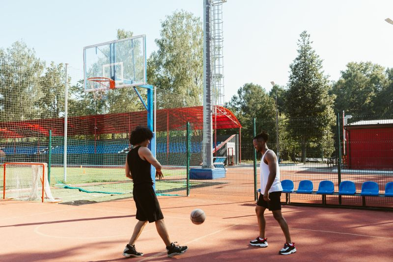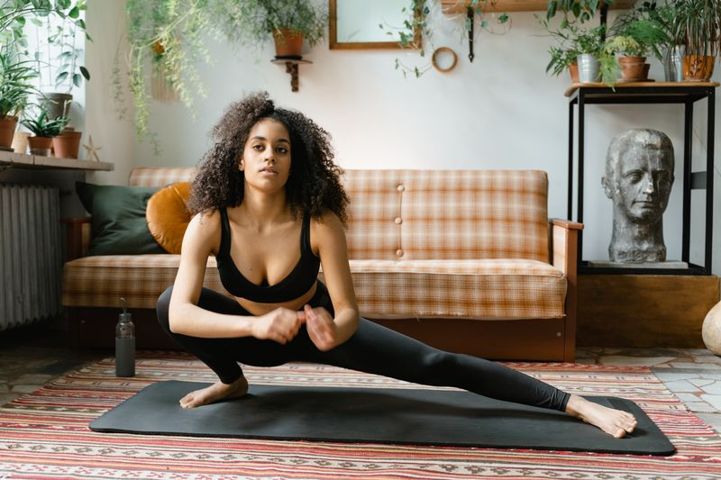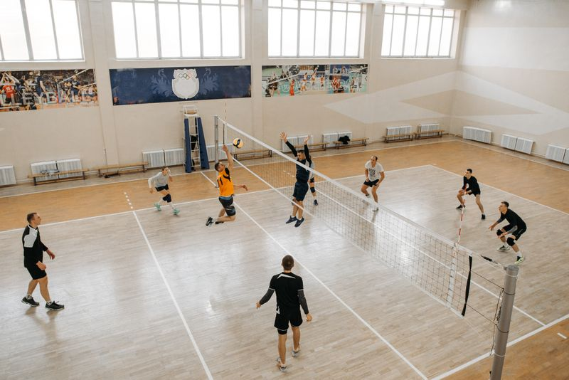4:00Stage 1 · 4'⏹What are these people doing?Which of these activities do you do?Which one would you suggest to an older patient?Students will say things like: running, basketball, yoga, volleyball, garden…Show the teacher's reformulationYes. These people go jogging in the park. These two play basketball. She does yoga. Volleyball is a team sport. And for an older patient? Maybe yoga, or doing the gardening.🔊 ListenGoal: students hear each activity with its verb before they see any rule.Watch the clipWhat are the women doing? Is it a sport?Show the answerThey are doing the gardening. It isn't a sport, but it is good, gentle exercise. Stage 2 · Discovery: do, play or go?⏱ 6 minTeacherShow the labelled photos first and give pairs one minute to look at the verbs. Then they sort the new activities without the photos. Don't give the rule: pairs say it themselves. Afterwards, open → Sheet 3 to check the three rules.6:00Pair work 6'⏹go jogging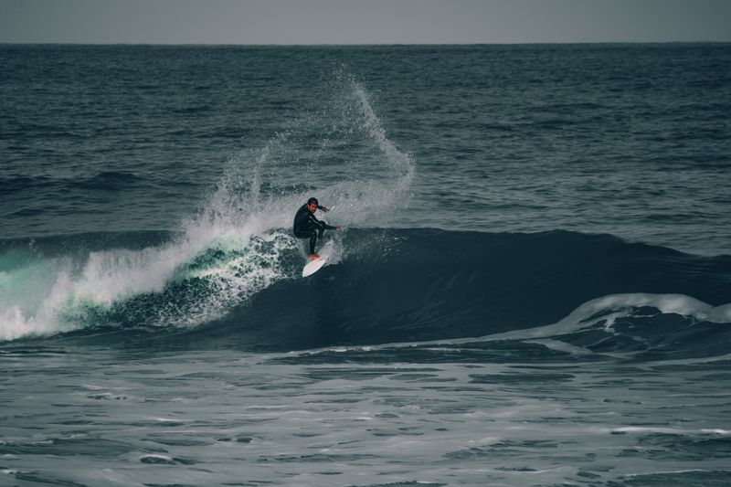go surfing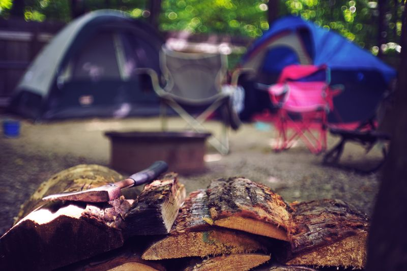go campinggo shoppingplay basketball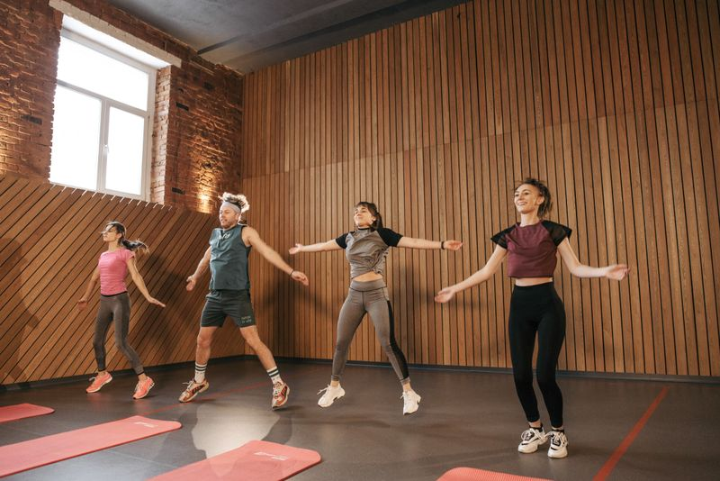do aerobics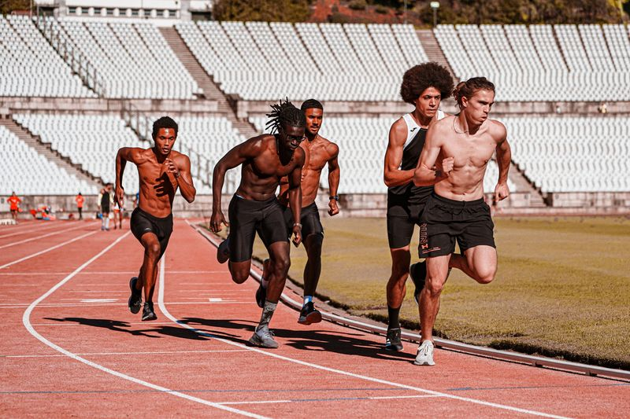do athleticsdo yogaTask 1In pairs: look at the verbs under the photos. Then put the 10 new activities into 3 groupsCheckAnswersResetThen ask the classGardening ends in -ing. So why do we say do the gardening and not go gardening?Pairs look back at the clip and at the DO rule on the website and find the answer themselves. Don't translate it for them.Show what students should noticego jogginggo + an -ing activity: you usually leave home to do itdo the gardeningdo + work or jobs: a job at home, even with -ing Stage 3 · Quick MFP: the chunks that need it⏱ 7 minDon'tDon't drill all twenty activities. Choose these six. For each one: meaning through a situation, CCQs, form, then drill (model → whole class → individuals).7:00MFP 7'⏹go jogging · go swimming🔊swimming /ˈswɪmɪŋ/Watch the clipAre they running fast or slowly? Is it a race?Show the answerSlowly. It isn't a race: they go jogging to keep fit.MeaningPlay the clip: "They leave home and run slowly for exercise. They go jogging." Then: "I can't run. My knees hurt. So I go swimming."CCQsDoes the activity end in -ing? → YesDo we say go to jogging? → NoForm✓ go + activity-ing: go jogging · go swimming✗ go to joggingplay basketball · play tennis🔊tennis /ˈtenɪs/MeaningPoint to the photo: "There is a ball, and they are playing a game. They play basketball."CCQsIs there a ball? → YesIs it a game with a winner? → YesForm✓ play + game or ball sport: play basketball · play tennis✗ play the basketballdo yoga · do aerobics🔊yoga /ˈjəʊɡə/MeaningPoint to the photo: "No ball, no -ing. She is stretching on a mat. She does yoga."CCQsIs there a ball? → NoDoes yoga end in -ing? → NoForm✓ do + activity (no ball, no -ing): do yoga · do aerobics✗ play yogado the gardeninggardening /ˈɡɑːdnɪŋ/🔊Meaning"On Okinawa, many older people plant and water vegetables every day. It is a job, and it is good exercise. They do the gardening."CCQsIs it a job at home? → YesSo which verb: do or go? → doForm✓ do the gardening · do some gardening✗ make the gardeningdo exercise → do regular exerciseexercise /ˈeksəsaɪz/ · regular /ˈreɡjələ(r)/🔊Meaning"Mr Nam walks for thirty minutes every day, not only once a month. He does regular exercise."CCQsOnce a month: is that regular? → NoEvery day or every week? → Yes, that is regularForm✓ do (regular / more / some) exercise✗ make exercisetake up + a sport🔊Meaning"My grandfather never swam. At sixty, his doctor said: try swimming. Now he swims every week. He took up swimming at sixty."CCQsDid he swim before sixty? → NoIs it a new activity for him? → YesForm✓ take up + sport/hobby: take up yoga · take up swimming✗ take up to swim Stage 4 · Don't learn words. Learn chunks.⏱ 3 minStress this part. Students don't memorise surfing, aerobics, athletics as single words: they memorise the verb with the activity. The wrong verb is the most common mistake here. Tap a word to see the chunk it lives in.runninggo running · go for a runsurfinggo surfingcampinggo campingshoppinggo shoppingathleticsdo athleticsaerobicsdo aerobicsteama team sport · play a team sportfitkeep fit · work out to keep fitkeenbe keen on running · be keen on tennisShow all chunks Stage 5 · Controlled practice: which one?⏱ 6 minTeacherRead the situation aloud; students say the right sentence. Keep it fast: 10 seconds per item. Ask why after each one: -ing, game, or job?0:1010" per item⏹Task 2Situation → the right sentence1 · A patient has bad knees, but she loves the water. What do you suggest?A You could play swimming.B You could go swimming.C You could do swimming.2 · Every Friday, Dr Hoa and four colleagues meet at the court with a ball.A They play basketball.B They go basketball.C They do the basketball.3 · Mrs Lan is 75. Every morning she waters the vegetables in her garden.A She goes to gardening.B She plays in the garden.C She does the gardening.4 · A student sits at his desk all day and gets very little exercise. Your advice:A You should do more regular exercise.B You should play more regular exercise.C You should make more regular exercise.5 · Dr Minh never swam before. Last month he started. Which sentence says this?A He has always been keen on swimming.B He warms up before he swims.C He took up swimming.6 · Before the match, the team does gentle exercises for ten minutes.A They take up the match.B They warm up.C They work out the match.CheckAnswersReset Stage 6 · Guided practice: what do you do to stay active?⏱ 6 minEach student picks four activities from the list (or their own) and tells a partner what they do, how often, and what they would like to take up.Step 1 · Choose 4 that are true for youswimmingjoggingcyclingfootballbasketballtennisyogaaerobicsthe gardeningcampinga team sportnothingTap to choose: 0 / 4Step 2 · Model dialogue (pair work)A What do you do to stay active?B I go jogging around the lake twice a week, and on Fridays I play football with my classmates.A Football is a team sport. Do you warm up first?B Not really. I know I should. What about you?A I do yoga at home. I want to keep fit, but I'm too busy to go swimming.B Why don't you take up cycling? You can cycle to the hospital.🔊 ListenStep 3 · Rule of the gameEach student uses 3 MUST-USE chunks (Tier 1) + 1 TRY-TO-USE expression (Tier 2), with the right verb.6:00Pair work 6'⏹Chunk counter: type what you said (or what your partner said). The page finds the chunks you used.Must use 0 / 3Try to use 0 / 1✓ Rule metgo jogginggo swimminggo cyclinggo campingplay basketballplay tennisplay footballdo yogado aerobicsdo the gardeningdo exercisea team sportdo regular exercisego for a runwork outkeep fittake up + sportbe keen onwarm upExample from a stronger studentI don't have much free time, but I go jogging twice a week and I play tennis with my brother on Sundays. I'm not very keen on team sports, so next month I want to take up yoga. Stage 7 · Information gap: how active is your partner?⏱ 4 minAsk your partner the 4 questions and tap their answers. Then tell the class your conclusion about your partner.3:00Interview 3'⏹Your partner's name1 · How often do you do exercise?Almost every dayOnce or twice a weekHardly ever2 · Do you play a team sport?Yes, every weekSometimesNo, never3 · What do you usually do at the weekend?Go jogging or go cyclingGo shopping or do the gardeningNothing much4 · Do you warm up before you exercise?AlwaysSometimesNeverYour conclusionAnswer all 4 questions to build your sentence.not very activequite activevery activeNew partnerBy now the chunks have gone all the way: see → understand → retrieve → personalise → communicate. Stage 8 · From vocabulary to Speaking Part 1 and the ward⏱ 6 minSay to the class"You've learned the language. Now use it to talk about YOU, and then about your patients." Open Speaking Part 1 → Sheet 7 but keep the sample answers closed.How often do you do exercise?Round 1 · 20 secondsAnswer naturally. No rules.0:2020"⏹Round 2 · 30 seconds + target languageAnswer again. Use TWO of these, with the right verb:do exercisego jogging / go swimmingplay football / tennisdo yogakeep fitwork out0:3030"⏹Model answerNot as often as I'd like. I go jogging once a week, and on Fridays I play football with my classmates. It helps me keep fit.Round 3 · Transfer: doctor and patient · 60 secondsA is a doctor. B is a patient who sits at a desk all day, sleeps badly and has bad knees. A gives advice: POINT → WHY → EXAMPLE, with one TRY-TO-USE chunk. Then swap.do regular exercisetake upgo swimmingdo yogawarm upPointWhyExample1:0060"⏹Model answerPointI think you should do regular exercise, three or four times a week, Whybecause it will help you sleep better, and swimming is gentle on your knees. ExampleFor example, you could take up swimming, or do yoga at home. Just warm up for five minutes first.The same rounds work for two more questions: Do you prefer team sports or doing sport alone? · What sport would you like to take up? Stage 9 · Exit retrieval: 3-second challenge⏱ 3 minRulesClose the website. No notes. The teacher gives the Vietnamese or the situation; students have 3 seconds to say the chunk with the right verb.Round A · Meaning → EnglishRound B · Chunk → your sentence3Press StartStartShow1 / 10ride a bike for exercise or pleasuremove through water for exerciseexercises for the body and the mind, on a matplant and water things in your gardena ball game for two teams with a high basketa sport like football or volleyballexercise often, every day or every weekstay healthy and strong by doing exercisestart doing a new sport (a phrasal verb)gentle exercises before sportgo jogginggo swimmingplay tennisplay basketballdo yogado aerobicsdo the gardeningdo regular exercisekeep fittake upwarm upa team sport Did it work? Exit checkSuccess is not "we covered twenty activities". Success is students choosing the right verb without thinking when they speak. Tick what you can say without looking.go + -ing: go jogging · go swimming · go cyclingplay + game or ball sport: play basketball · play tennisdo + other activity: do yoga · do aerobicsdo the gardeningdo (regular) exercisea team sportkeep fit · work outtake up a sportwarm up Group 2 · Free time and habitsTimeline · six phases · tap one to open it1–4Recognition20'5Controlled6'6Guided6'7Personalized4'8Transfer6'9Retrieval / recycling3' Three tiers: use, try, recogniseThe Vocabulary sheet already separates CORE, B2 UPGRADE and COLLOCATIONS. In class, separate one more thing: what students must understand and what they must use.Tier 1 · MUST USE 10 itemsEveryone says these by the end of the lesson.spend time with friendseat outcook a mealgo for long walkscycle through the countrysideplay a musical instrumentplay board gameschat on social mediacheck your phone for messagesgo on holidayTier 2 · TRY TO USE 8 itemsStronger students put these into their output.unwinda couch potatosocializeget into the habit ofbreak the habita creature of habitmake time forcatch up with friendsTier 3 · RECOGNISEUnderstand when you meet them. Weaker students do not have to use them yet.go clubbingtake public transporta busy social life Stage 1 · Context first: what do you do after classes?⏱ 4 minTeacherKeep the Vocabulary sheet closed. Show the four photos, then play the clip without sound. Ask three easy questions and accept any answer, in English or Vietnamese. Then reformulate. No long explanations.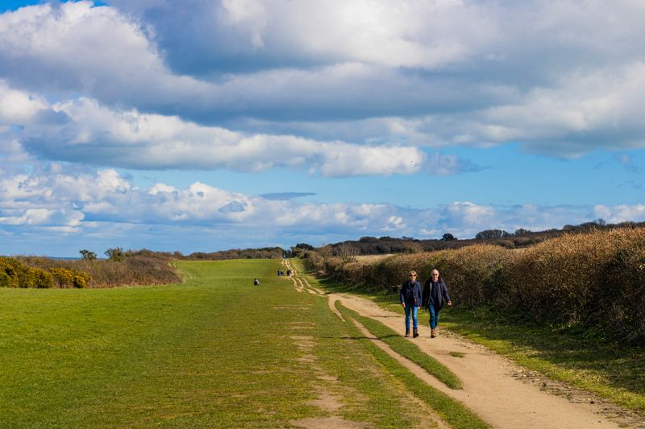4:00Stage 1 · 4'⏹What are these people doing in their free time?Which of these things do you do every week?Which one is a good habit? Which one is a bad habit?Students will say things like: friends, phone, walk, bike, relax…Show the teacher's reformulationYes. They spend time with friends. She chats on social media. He checks his phone for messages all the time. That's a habit! And this couple go for long walks.🔊 ListenGoal: students link each chunk to one concrete picture before they see it written.Watch the clipWhat is the man doing? Is he in a city?Show the answerNo, he isn't. He is cycling through the countryside. Stage 2 · Discovery: at home, in town or in nature?⏱ 6 minTeacherNow open the website → Sheet 3. Show the nine photos with their labels. Don't teach the chunks one by one. Give pairs the task instead. Afterwards, write three more activities on the board: go on holiday, play board games and take public transport. Pairs decide which group each one joins, or whether it needs a group of its own, and explain their choice.6:00Pair work 6'⏹cook a mealplay a musical instrument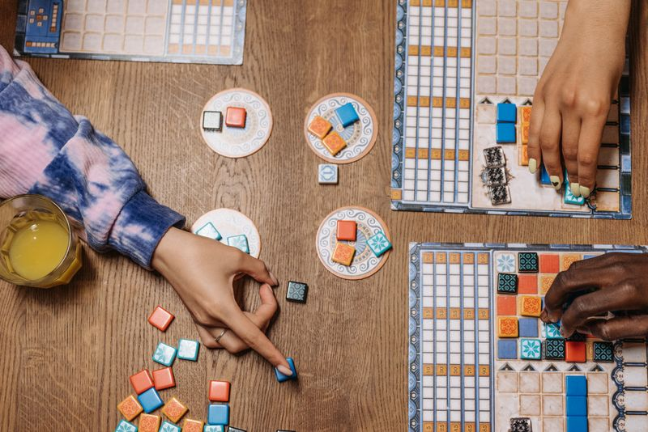play board games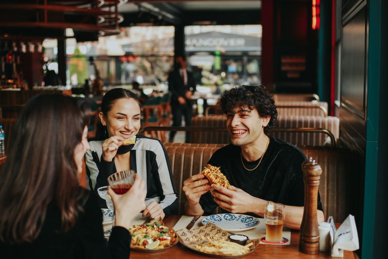eat outgo clubbing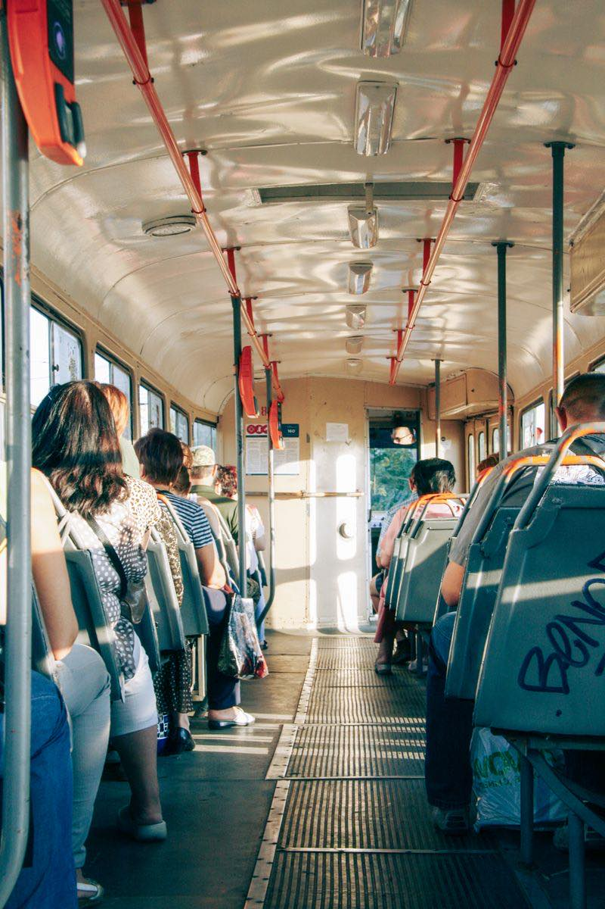take public transportgo for long walkscycle through the countrysidego on holidayTask 1In pairs: put the 6 activities into 3 groupsCheckAnswersResetThen ask the classWhat's the difference between eat out and cook a meal?Students look at the meaning and the example on the website and find the answer themselves. Don't translate it for them.Show what students should noticeeat outyou have the meal in a restaurant → someone else cooks itcook a mealyou make the food yourself, usually at home Stage 3 · Quick MFP: only the chunks that need it⏱ 7 minDon'tDon't analyse meaning, form and pronunciation for 20 chunks. Choose these six. For each one: meaning through a situation, CCQs, form, then drill (model → whole class → individuals).7:00MFP 7'⏹spend time with friendsspend /spend/🔊MeaningPoint to the photo: "They are together on Saturday afternoon. They spend time with friends."CCQsAre they together? → YesAre they at work? → NoForm✓ spend time with + person · spend time + -ing✗ spend time to studyeat outeat /iːt/🔊Meaning"I don't want to cook tonight. Let's go to a restaurant. Let's eat out."CCQsDo I eat at home? → NoWho cooks the food? → The restaurantForm✓ eat out (no object) · eat out once a month✗ eat out dinnercook a mealmeal /miːl/🔊Watch the clipIs she in a restaurant? What is she doing?Show the answerNo, she is at home. She is cooking a meal.MeaningPlay the clip: "She is preparing dinner at home. She is cooking a meal."CCQsDoes she make the food herself? → YesIs a meal breakfast, lunch or dinner? → YesForm✓ cook a meal · cook a meal for + person✗ do a mealgo for long walkswalk /wɔːk/🔊Meaning"My grandfather walks for two hours by the lake, just for pleasure. He goes for long walks."CCQsIs it a short time? → NoDoes he walk because he must go somewhere? → No, for pleasureForm✓ go for a long walk · go for long walks✗ go to long walksplay a musical instrument/ˌmjuːzɪkl ˈɪnstrəmənt/🔊MeaningPoint to the photo: "A guitar and a piano are musical instruments. These men play a musical instrument."CCQsIs a guitar a musical instrument? → YesIs a stethoscope a musical instrument? → NoForm✓ play a musical instrument · play the guitar / the piano✗ play musical instrumentget into the habit of vs break the habit🔊habit /ˈhæbɪt/Meaningget into the habit of = start doing something regularly · break the habit = stop doing something you always do. Teach this pair together.CCQsI got into the habit of walking after dinner. Do I walk now? → Yes, regularlyI broke the habit of checking my phone in bed. Do I check it in bed now? → NoForm✓ get into the habit of + -ing✓ break the habit (of + -ing)✗ get into the habit to walk Stage 4 · Don't learn words. Learn chunks.⏱ 3 minStudents don't memorise meal, walk, habit, social as single words. They memorise the chunks. Collocations and fixed expressions are what make speech fluent. Tap a word to see the chunks it lives in.mealcook a meal · cook a meal for friendswalkgo for a long walk · go for long walkstimespend time with friends · make time for exercisehabitget into the habit of · break the habit · a creature of habitsocialchat on social media · a busy social life · socializephonecheck your phone for messagesgameplay board gamestransporttake public transportholidaygo on holidayShow all chunks Stage 5 · Controlled practice: which one?⏱ 6 minTeacherRead the situation aloud; students say the chunk. Keep it fast: 10 seconds per item. Then ask one student why the other two answers are wrong.0:1010" per item⏹Task 2Situation → chunk1 · Nobody wants to cook tonight, so you and your friends go to a small restaurant.A We cook a meal.B We eat out.C We play board games at home.2 · After a night shift, Minh lies on the sofa and listens to quiet music.A He socializes with friends.B He breaks the habit.C He unwinds.3 · Every day Dr Hoa has the same breakfast and takes the same bus to the hospital.A She is a creature of habit.B She is a couch potato.C She has a very busy social life.4 · A patient smokes after every meal. He wants to stop.A He wants to get into the habit.B He wants to catch up with friends.C He wants to break the habit.5 · Lan is always busy, but she finds one hour every evening to go for a walk.A She makes time for exercise.B She spends time on social media.C She takes public transport home.6 · Tuan doesn't drive. He goes to the hospital by bus every day.A He goes for long walks to work.B He takes public transport.C He cycles through the countryside.CheckAnswersReset Stage 6 · Guided practice: my free-time habits⏱ 6 minThis is the main activity: it turns the chunks into speaking ammunition. Each student picks five things from the list and tells a partner how often they do them.Step 1 · Choose 5 that are true for youcookingeating outlong walkscyclingmusicboard gamessocial mediamy phonefriendsholidaysTap to choose: 0 / 5Step 2 · Model dialogue (pair work)A What do you usually do in your free time?B I usually spend time with friends. We eat out about once a month.A Do you ever cook a meal yourself?B Not often. To be honest, I'm a bit of a couch potato at the weekend.A How often do you check your phone for messages?B All the time! I want to break the habit, so I keep my phone in my bag during lectures.🔊 ListenStep 3 · Rule of the gameEach student uses 3 MUST-USE chunks (Tier 1) + 1 TRY-TO-USE expression (Tier 2) and one frequency expression (usually, once a month, rarely).6:00Pair work 6'⏹Chunk counter: type what you said (or what your partner said). The page finds the chunks you used.Must use 0 / 3Try to use 0 / 1✓ Rule metspend time with friendseat outcook a mealgo for long walkscycle through the countrysideplay a musical instrumentplay board gameschat on social mediacheck your phone for messagesgo on holidayunwinda couch potatosocializeget into the habit ofbreak the habita creature of habitmake time forcatch up with friendsExample from a stronger studentI'm a bit of a creature of habit. Every Sunday I go for a long walk by the lake, and in the evening I cook a meal with my roommates. But I check my phone for messages too often, so I really want to break the habit. Stage 7 · Information gap: creature of habit or spontaneous?⏱ 4 minAsk your partner the 4 questions and tap their answers. Then tell the class your conclusion about your partner.3:00Interview 3'⏹Your partner's name1 · When you eat out, do you always go to the same place?Almost alwaysSometimesNever2 · Do you do the same things every weekend?Yes, alwaysQuite oftenNo, it changes3 · A friend says: Let's go on holiday this weekend! What do you answer?No, I need a planMaybe, let me thinkYes, let's go!4 · Is it easy for you to break a habit?Very hardQuite hardEasyYour conclusionAnswer all 4 questions to build your sentence.spontaneousin betweencreature of habitNew partnerGoal: students ask and answer real questions about habits. Doctors ask patients the same kind of questions, so this prepares the transfer round. Stage 8 · From vocabulary to Speaking Part 1 and the clinic⏱ 6 minSay to the class"You've learned the language. Now let's use it to talk about YOU, and then about a patient." Open Speaking Part 1 → Sheet 7 but keep the sample answers closed.What do you usually do in your free time?Round 1 · 20 secondsAnswer naturally. No rules.0:2020"⏹Round 2 · 30 seconds + target languageAnswer again. Use TWO of these:spend time with friendseat outgo for long walkscook a mealunwinda creature of habit0:3030"⏹Model answerOn weekday evenings I usually unwind with my guitar. At the weekend I spend time with friends: we eat out or go for long walks by the lake.Round 3 · Upgrade: + WHY + EXAMPLESame answer, now with POINT → WHY → EXAMPLE.PointWhyExample0:4545"⏹Model answerPointIn my free time I like to go for long walks Whybecause it helps me unwind after a long day of lectures. ExampleFor example, last Sunday I walked around the lake for two hours, and I didn't check my phone for messages once.Round 4 · Transfer: doctor and patientStudent A is a doctor. Student B is a patient who feels tired all the time. A asks what the patient does in the evening (What do you usually do in the evening?) and gives two pieces of advice (Could you make time for…? Try to get into the habit of…). B answers with the chunks. Then swap.check your phone for messagesa couch potatogo for long walksget into the habit ofbreak the habitmake time for1:3090"⏹Model answerDoctor: What do you usually do in the evening? · Patient: To be honest, I'm a couch potato. I check my phone for messages until midnight. · Doctor: Could you make time for a short walk after dinner? Try to get into the habit of leaving your phone outside the bedroom.The same rounds work for two more Part 1 questions: Do you have the same routine every weekend? · Do you think your lifestyle is healthy? Finish by asking each student for one habit they want to start and one they want to break. Stage 9 · Exit retrieval: 3-second challenge⏱ 3 minRulesClose the website. No notes. The teacher gives the Vietnamese or the situation; students have 3 seconds to say the English chunk. Repeat this deck at the start of the next lesson.Round A · Meaning → EnglishRound B · Chunk → your sentence3Press StartStartShow1 / 10have a meal in a restaurant, not at homeprepare breakfast, lunch or dinner yourselfwalk for a long time, just for pleasurebe together with your friendstravel by bus or trainrelax after work or worry (one word)a person who sits and watches TV a lotstop doing something you always dostart doing something regularly (get … of)find time for something although you are busyeat outcook a mealgo for long walksspend time with friendscheck your phone for messagesunwinda creature of habitbreak the habitmake time for Did it work? Exit checkSuccess is not "we covered 20 chunks". Success is students saying these naturally when they speak. Tick what you can say without looking.spend time with friendseat outcook a mealgo for long walksplay a musical instrumentcheck your phone for messagesunwindget into the habit ofbreak the habita creature of habit Group 3 · Everyday routines and sleepTimeline · six phases · tap one to open it1–4Recognition20'5Controlled6'6Guided6'7Personalized4'8Transfer6'9Retrieval / recycling3' Three tiers: use, try, recogniseThe Vocabulary sheet already separates CORE, B2 UPGRADE and COLLOCATIONS. In class, separate one more thing: what students must understand and what they must use.Tier 1 · MUST USE 11 itemsEveryone says these by the end of the lesson.get upwake up earlywork long hourstake a breakget home latefeel tiredstay up until midnightgo to bedfall asleeptake a napget enough sleepTier 2 · TRY TO USE 8 itemsStronger students put these into their output.sleep-depriveda sleepless nightsuffer from insomniaa hectic scheduleburn the midnight oila lie-ina good night's sleepa daily routineTier 3 · RECOGNISEUnderstand when you meet them. Weaker students do not have to use them yet.watch TV Stage 1 · Context first: a day and a night in photos⏱ 4 minTeacherKeep the Vocabulary sheet closed. Show the four photos, then play the clip. Ask three easy questions and accept any answer, in English or Vietnamese. Then reformulate. No long explanations.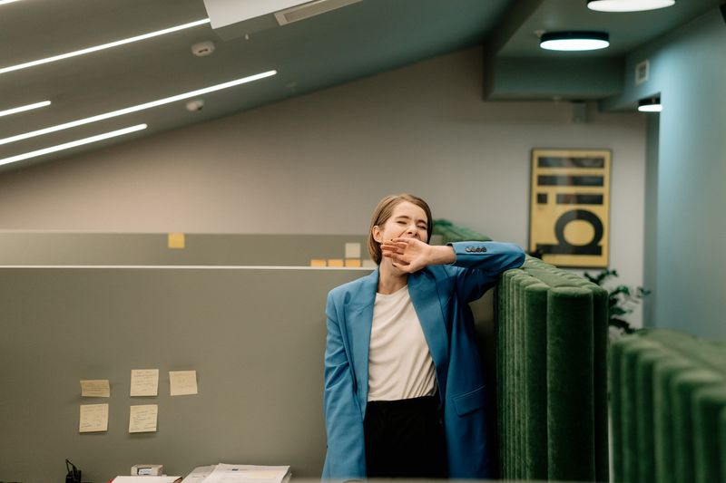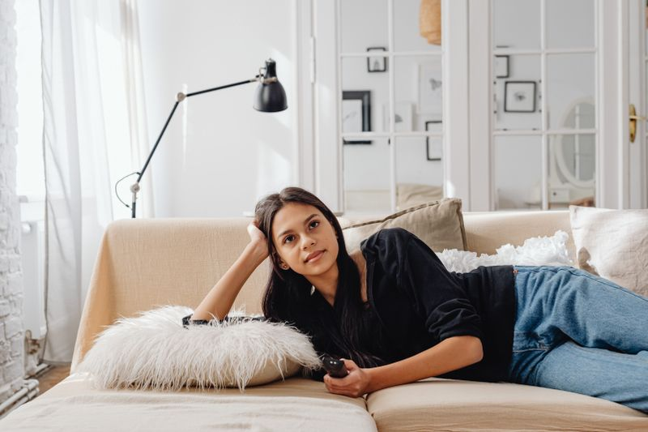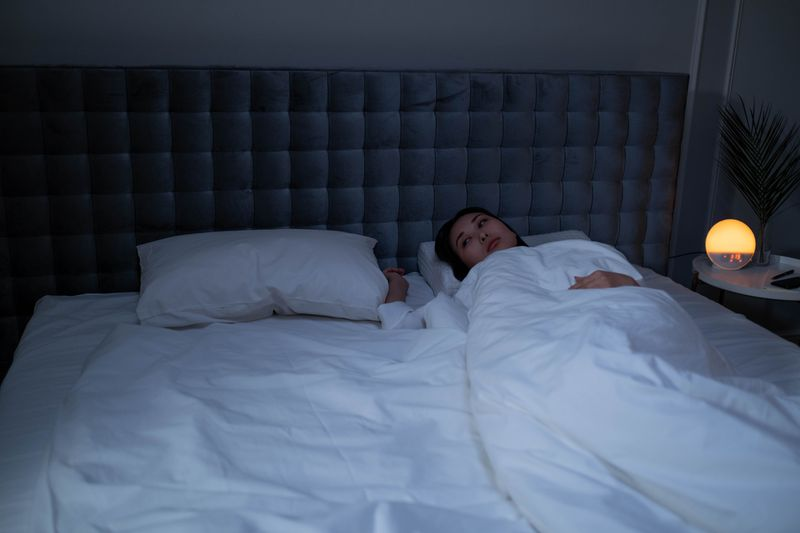4:00Stage 1 · 4'⏹Who is tired? Who is sleeping well? Who can't sleep?What does the woman in the clip do?What time do you usually go to bed?Students will say things like: tired, sleep, TV, alarm clock, late…Show the teacher's reformulationYes. This woman feels tired at work. In the evening this woman watches TV. This man is asleep: he fell asleep quickly. But this woman can't sleep. If it happens every night, she suffers from insomnia. In the clip the alarm rings, so she has to wake up and get up.🔊 ListenGoal: students link each chunk to one concrete moment of a day or a night.Watch the clipWhat does the woman do? What does she have to do next?Show the answerShe turns off her alarm clock. Now she has to wake up and get up. Stage 2 · Discovery: morning, daytime or night?⏱ 6 minTeacherNow open the website → Sheet 3. Don't teach the chunks one by one. Pairs look at the photos and their labels, then sort the expressions. Afterwards ask where take a nap goes and why: it is a short sleep, but in the daytime.6:00Pair work 6'⏹wake up early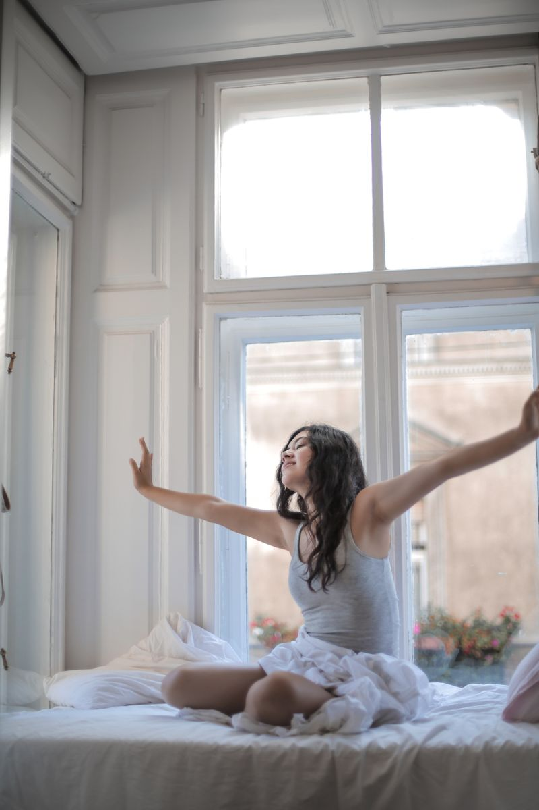get upwork long hourstake a breaktake a nap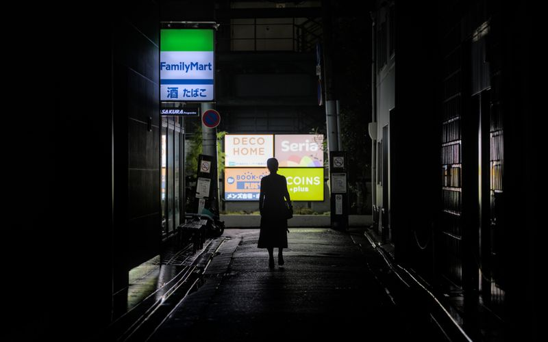get home latestay up until midnight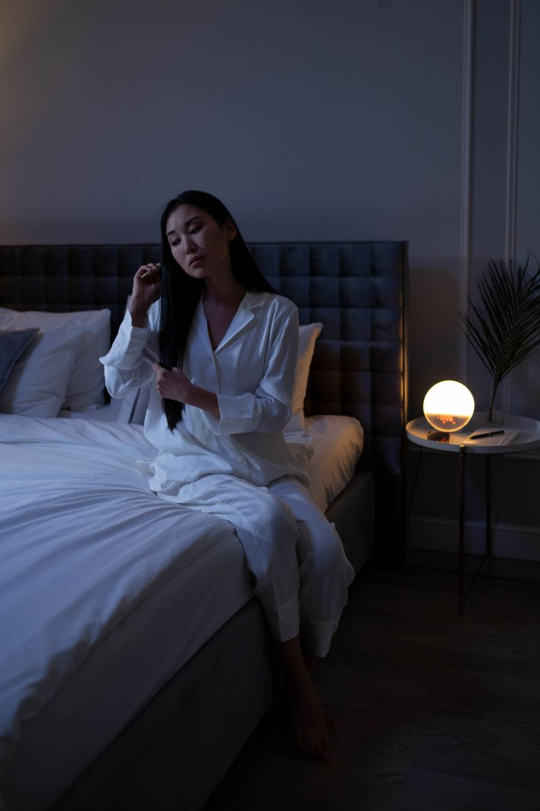go to bedTask 1In pairs: put the 10 expressions into 3 groupsCheckAnswersResetThen ask the classWhat's the difference between wake up and get up?Students look at the clip again and at the examples on the website and find the answer themselves. Don't translate it for them.Show what students should noticewake upyour eyes open → you stop sleepingget upyou get out of bed Stage 3 · Quick MFP: six chunks that need it⏱ 7 minDon'tDon't analyse meaning, form and pronunciation for all 11 chunks. Take these six. For each one: meaning through a photo or a situation, CCQs, form, then drill (model → whole class → individuals).7:00MFP 7'⏹go to bed vs fall asleep🔊bed /bed/ · asleep /əˈsliːp/Meaning"I go to bed at eleven, but I read on my phone. I fall asleep at half past eleven." Two moments: first the bed, then the sleep. Teach this pair together.CCQsI went to bed at eleven. Was I asleep at eleven? → Not yetWhich comes first? → go to bedForm✓ go to bed · went to bed✓ fall asleep · fell asleep✗ go to the bed to sleepstay up until midnightstay /steɪ/ · midnight /ˈmɪdnaɪt/🔊MeaningShow the photo: "It's very late, but she isn't in bed. She is studying. She stays up until midnight."CCQsDoes she go to bed early? → NoIs she still awake at eleven? → YesForm✓ stay up until / till + time✓ stay up late✗ wake up until midnighttake a napnap /næp/🔊MeaningShow the photo: "After lunch he sleeps for twenty minutes on the couch. He takes a nap."CCQsIs it a long sleep? → No, a short oneIs it at night? → No, during the dayForm✓ take / have a nap✓ a twenty-minute nap✗ make a napwork long hourshour /ˈaʊə(r)/🔊MeaningShow the photo: "It's nine in the evening and he is still at his desk. He works long hours."CCQsDoes he work only eight hours a day? → No, moreDoes he have much free time? → NoForm✓ work long hours✗ work long hourfeel tired → sleep-deprived🔊tired /ˈtaɪəd/ · deprived /dɪˈpraɪvd/Meaningfeel tired = today, after a long day · sleep-deprived = you haven't had enough sleep for some time (B2). "After five nights on call, the junior doctor is sleep-deprived."CCQsI feel tired after one long day. Am I sleep-deprived? → Not reallyI sleep four hours a night for two weeks. Am I sleep-deprived? → YesForm✓ feel tired · feel very tired✓ be sleep-deprived✗ I feel tiringsuffer from insomniainsomnia /ɪnˈsɒmniə/🔊Watch the clipCan he fall asleep?Show the answerNo, he can't sleep. If this happens most nights, he suffers from insomnia.Meaning"For three months Mrs Lan has gone to bed at ten, but she lies awake until three. She suffers from insomnia." Play the clip.CCQsIs it only one bad night? → No, it happens again and againDoes she sleep well? → NoForm✓ suffer from insomnia✓ have insomnia✗ suffer insomnia Stage 4 · Don't learn words. Learn chunks.⏱ 3 minStress this part. Students don't memorise nap, asleep, midnight, insomnia as single words. They memorise the chunks those words live in. Tap a word to see its chunks.sleepget enough sleep · a good night's sleep · sleep-deprivedupwake up early · get up · stay up until midnighttaketake a break · take a naplateget home late · stay up late · work latebedgo to bed · get out of bed · stay in bednighta sleepless night · a night shift · late at nightschedulea hectic schedule · a busy schedulemidnightstay up until midnight · burn the midnight oilShow all chunks Stage 5 · Controlled practice: which one?⏱ 6 minTeacherRead the situation aloud; students say the chunk. Keep it fast: 10 seconds per item. Then ask one student to say the whole sentence again with the chunk. At home, students tap the answer and check.0:1010" per item⏹Task 2Situation → chunk1 · Lan reads her notes in bed, and after five minutes her eyes close.A She falls asleep.B She goes to bed early.C She gets up at once.2 · After a busy morning on the ward, Dr Minh sleeps for twenty minutes in the staff room.A He stays up until midnight.B He takes a nap.C He gets home late.3 · Mr Hai lies awake almost every night, and this has happened for months.A He has a lie-in every morning.B He takes a long break after work.C He suffers from insomnia.4 · The nurse has worked for five hours with no rest.A She should take a break.B She should stay up until midnight.C She should wake up early.5 · It's Sunday. Tuan doesn't set an alarm and stays in bed until ten.A He wakes up early.B He works long hours.C He has a lie-in.6 · Before the anatomy exam, Hoa studied in the library until one o'clock in the morning.A She went to bed early.B She burnt the midnight oil.C She took a short nap after lunch.CheckAnswersReset Stage 6 · Guided practice: my day and my sleep⏱ 6 minThis is the main activity: it turns the chunks into speaking about the students' own day and their own sleep.Step 1 · Choose 4 that are true for youweekday morningsweekend morningsa day of lectures and lab workexam weeksnapseveningsyour phone in bedcoffeea sleepless night you rememberthe night before a testTap to choose: 0 / 4Step 2 · Model dialogue (pair work)A What time do you usually get up on weekdays?B At half past five. I wake up early because our first lecture starts at seven.A Do you get enough sleep?B Not really. In exam weeks I stay up until midnight, so I often feel tired in class.A Do you ever take a nap?B Yes, twenty minutes after lunch. And on Sundays I have a lie-in, because I'm a bit sleep-deprived.🔊 ListenStep 3 · Rule of the gameEach student uses 4 MUST-USE chunks (Tier 1) + 1 TRY-TO-USE expression (Tier 2).6:00Pair work 6'⏹Chunk counter: type what you said (or what your partner said). The page finds the chunks you used.Must use 0 / 4Try to use 0 / 1✓ Rule metget upwake up earlywork long hourstake a breakget home latefeel tiredstay up until midnightgo to bedfall asleeptake a napget enough sleepsleep-depriveda sleepless nightsuffer from insomniaa hectic scheduleburn the midnight oila lie-ina good night's sleepa daily routineExample from a stronger studentOn weekdays I get up at half past five, but in exam weeks I stay up until midnight, so I feel tired in the afternoon. I take a nap after lunch, and on Sundays I have a lie-in because I'm a bit sleep-deprived. Stage 7 · Information gap: early bird or night owl?⏱ 4 minAsk your partner the 4 questions and tap their answers. Then tell the class your conclusion about your partner, with one reason.3:00Interview 3'⏹Your partner's name1 · What time do you usually go to bed on a school night?Before elevenAround midnightAfter midnight2 · How easy is it for you to get up in the morning?EasyOK with an alarmVery hard3 · When do you study best?In the morningIn the afternoonLate at night4 · What do you do on your day off?Get up early as usualSleep a bit laterHave a long lie-inYour conclusionAnswer all 4 questions to build your sentence.early birdin betweennight owlNew partnerBy now the chunks have gone all the way: see → understand → retrieve → personalise → communicate. Stage 8 · From vocabulary to Speaking Part 1 and a sleep history⏱ 6 minSay to the class"You've practised the chunks. Now use them to talk about YOU, and then about a patient." Open Speaking Part 1 → Sheet 7 but keep the sample answers closed.How many hours do you sleep on a school night?Round 1 · 20 secondsAnswer naturally. No rules.0:2020"⏹Round 2 · 30 seconds + target languageAnswer again. Use TWO of these:get enough sleepstay up until midnightfeel tireda good night's sleepsleep-deprived0:3030"⏹Model answerUsually about six hours, so I don't really get enough sleep. In exam weeks I stay up until midnight and I feel tired in the morning lectures.Round 3 · Upgrade: + WHY + EXAMPLESame answer, now with POINT → WHY → EXAMPLE.PointWhyExample0:4545"⏹Model answerPointUsually about six hours, which isn't enough for a good night's sleep, Whybecause our first lecture starts at seven and I often stay up until midnight. ExampleFor example, last week I had two tests, so by Friday I was really sleep-deprived.Round 4 · Transfer: take a sleep historyWork in pairs. A is a doctor, B is a patient who works long hours and sleeps badly. The doctor asks three questions about the patient's sleep; the patient answers with the chunks. Then swap.go to bedfall asleepwake uptake a napwork long hourssuffer from insomnia2:002'⏹Model answerDoctor: What time do you usually go to bed? · Patient: Around one. I work long hours and I get home late. · Doctor: How long does it take you to fall asleep? · Patient: About an hour. I often have a sleepless night, so I feel tired all day. · Doctor: Do you take a nap during the day? · Patient: Yes, for two hours after lunch.The same rounds work for the other sleep questions in Part 1: What time do you usually get up on weekdays? · Do you ever take a nap during the day? Stage 9 · Exit retrieval: 3-second challenge⏱ 3 minRulesClose the website. No notes. The teacher gives the Vietnamese or the situation; students have 3 seconds to say the English chunk.Round A · Meaning → EnglishRound B · Chunk → your sentence3Press StartStartShow1 / 10get out of bed in the morningstop sleeping before most people dostop working for a short time to resthave a short sleep during the daystart to sleepnot go to bed before twelve o'clock at nightnot having had enough sleep for some timebe unable to sleep well, often for a long timea morning when you stay in bed later than usualstudy or work until late at night (an idiom)get upwake up earlywork long hourstake a breakget home latefeel tiredstay up until midnightgo to bedfall asleeptake a napsleep-deprivedsuffer from insomnia Did it work? Exit checkSuccess is not "we covered 20 words". Success is students saying these chunks naturally about their own day and about a patient's sleep. Tick what you can say without looking.get up / wake up earlywork long hourstake a breakget home latefeel tiredstay up until midnightgo to bed / fall asleeptake a napget enough sleepsleep-deprivedsuffer from insomnia Group 4 · A long and healthy lifeTimeline · six phases · tap one to open it1–4Recognition20'5Controlled6'6Guided6'7Personalized4'8Transfer6'9Retrieval / recycling3' Three tiers: use, try, recogniseThe Vocabulary sheet already separates CORE, B2 UPGRADE and COLLOCATIONS. In class, separate one more thing: what students must understand and what they must use.Tier 1 · MUST USE 9 itemsEveryone says these by the end of the lesson.a centenarianlead an active lifegrow your own fruit and vegetablesfamily lifea traditional societythe younger generationdietlifestyle / a healthy lifestylestressfulTier 2 · TRY TO USE 7 itemsStronger students put these into their output.life expectancythe secret of longevitylive to a ripe old agea balanced dietprocessed foodcut down onboost the immune systemTier 3 · RECOGNISEUnderstand when you meet them. Weaker students do not have to use them yet.seaweed Stage 1 · Context first: who lives longer?⏱ 4 minTeacherKeep the Vocabulary sheet closed. Show the four photos, ask the easy questions and accept any answer, in English or Vietnamese. Then play the clip and reformulate. No long explanations.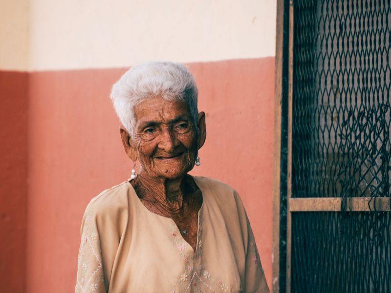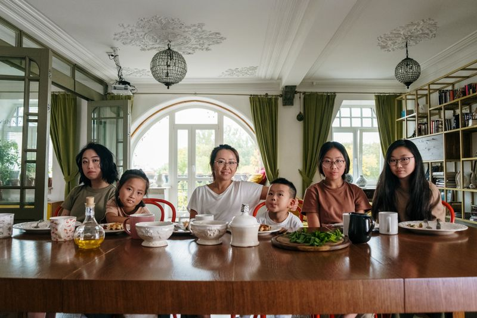4:00Stage 1 · 4'⏹Which photos show a long and healthy life?Who will live longer: the old woman or the man at his laptop? Why?What helps people live to 100?Students will say things like: old, happy, family, vegetables, tired, work too much…Show the teacher's reformulationYes. This woman may be a centenarian: she is 100 or older. Her lifestyle is healthy: a good diet and a lot of family life. This man's job is very stressful.🔊 ListenGoal: students link each chunk to one real person or place before they see any definition.Watch the clipWhat is the woman doing? Where does her food come from?Show the answerShe is picking tomatoes. She grows her own fruit and vegetables, so she doesn't buy them in a supermarket. Stage 2 · Discovery: diet, way of life or people?⏱ 6 minTeacherNow open the website → Sheet 3. Pairs look at the photos and read the labels, then sort the expressions. Don't teach the words one by one. Afterwards, write one more expression on the board: grow your own fruit and vegetables. Pairs can defend DIET or WAY OF LIFE, so they explain their choice.6:00Pair work 6'⏹a centenarian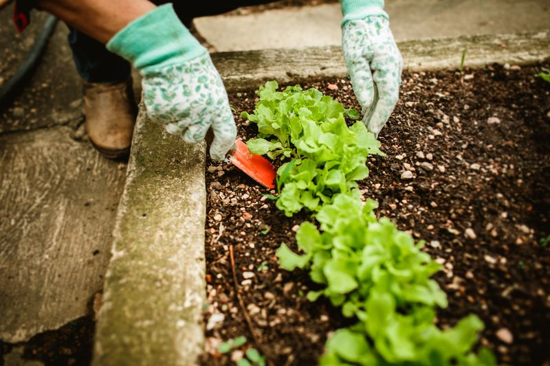grow your own fruit and vegetablesfamily life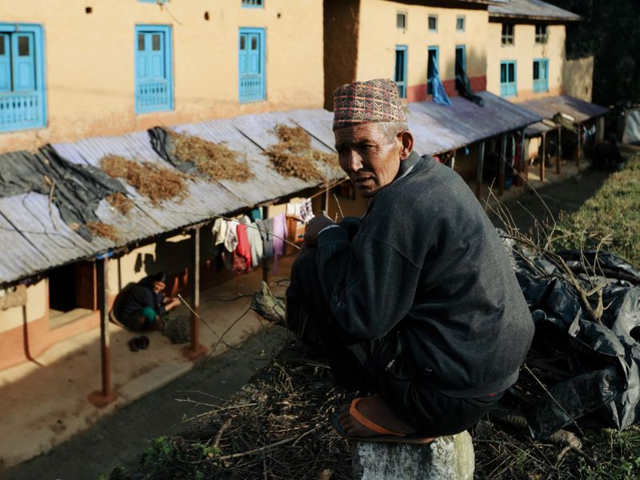a traditional society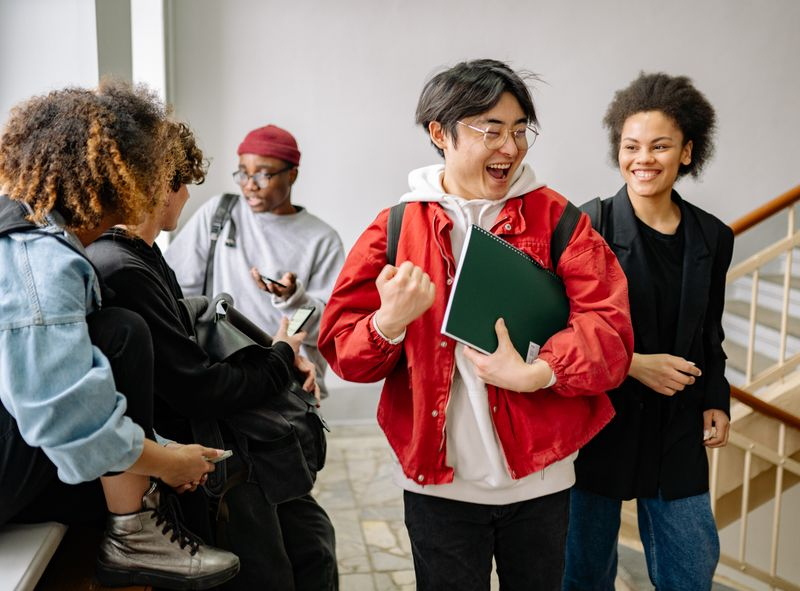the younger generation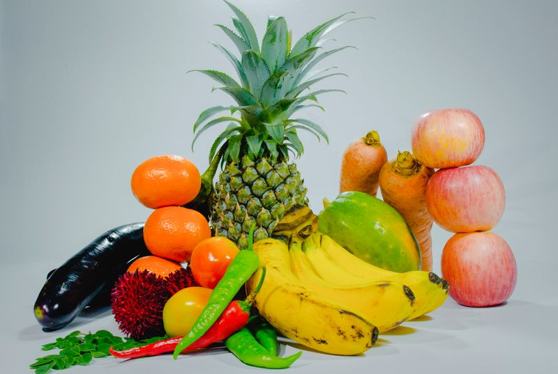dietstressfulseaweedTask 1In pairs: put the 10 expressions into 3 groupsCheckAnswersResetThen ask the classWhat's the difference between diet and lifestyle?Students look at the definitions and the examples on the website and find the answer themselves. Don't translate it for them. Point out that diet here is the food you usually eat, not only a plan to lose weight.Show what students should noticedietthe food you usually eat every daylifestylethe way you live: food, work, sleep, exercise and friends Stage 3 · Quick MFP: only the chunks that need it⏱ 7 minDon'tDon't analyse meaning, form and pronunciation for every word. Choose these six chunks. For each one: meaning through a situation, CCQs, form, then drill (model → whole class → individuals).7:00MFP 7'⏹a centenarian/ˌsentɪˈneəriən/🔊MeaningPoint to the photo: "Imagine this woman is 102. A person who is 100 or older is a centenarian. Okinawa is famous for its centenarians."CCQsMy grandmother is 95. Is she a centenarian? → Not yetCan a centenarian be a man? → YesForm✓ a centenarian · many centenarians✗ She is centenarian.lead an active lifelead /liːd/ · active /ˈæktɪv/🔊Watch the clipDo these people sit at home all day?Show the answerNo. They exercise outdoors: they lead an active life.MeaningPlay the clip: "These people are over 70, but they exercise outdoors every day. They lead an active life."CCQsDo they sit in front of the TV all day? → NoIs it only sport, or also walking and gardening? → Also walking and gardeningForm✓ lead an active life · they lead active lives✗ lead active lifegrow your own fruit and vegetablesgrow /ɡrəʊ/🔊MeaningPoint to the garden photo: "My grandparents don't buy lettuce. They plant it and look after it. They grow their own vegetables."CCQsDo they buy the vegetables in a supermarket? → NoWho plants them? → They doForm✓ grow my / your / their own + fruit / vegetables✗ grow own vegetablesdiet vs lifestyle🔊diet /ˈdaɪət/ · lifestyle /ˈlaɪfstaɪl/Meaningdiet = the food you usually eat · lifestyle = the way you live (food, work, sleep, exercise, friends). Teach this pair together.CCQsI eat rice, fish and vegetables every day. Is that my diet or my lifestyle? → My dietI walk to work and sleep eight hours. Diet or lifestyle? → LifestyleForm✓ a healthy diet · a healthy lifestyle✓ a balanced diet · an active lifestyle✗ a health lifestylethe younger generationgeneration /ˌdʒenəˈreɪʃn/🔊Meaning"In Sardinia, old people still eat a big family meal every Sunday, but the younger generation are eating more chips and burgers."CCQsIs it one young person? → No, all the young peopleAre your grandparents the younger generation? → NoForm✓ the younger generation + are / is✓ the older generationa traditional societytraditional /trəˈdɪʃənl/🔊MeaningPoint to the village photo: "Here people keep old customs, and three generations often live in one house. It's a traditional society."CCQsDo people keep the old customs? → YesIs a big modern city a traditional society? → Usually notForm✓ a traditional society · traditional societies Stage 4 · Don't learn words. Learn chunks.⏱ 3 minStudents don't memorise diet, life, stress, generation as single words. They memorise the chunks the words live in. Tap a word to see its chunks, then ask a student to make one sentence about a patient.lifelead an active life · family life · live to a ripe old agedieta healthy diet · a balanced diet · change your dietlifestylea healthy lifestyle · an active lifestyle · a busy lifestylestressstressful · a stressful job · a stressful night shiftowngrow your own fruit and vegetables · cook your own mealsgenerationthe younger generation · the older generation · three generations in one housefoodprocessed food · fresh food · cut down on processed foodlongthe secret of longevity · life expectancy · a long and healthy lifeimmuneboost the immune systemShow all chunks Stage 5 · Controlled practice: which one?⏱ 6 minTeacherRead the situation aloud; students say the chunk. Keep it fast: 5–10 seconds per item. At home, students tap the answer and check.0:1010" per item⏹Task 2Situation → chunk1 · Mrs Kato is 102 and still walks to the market every morning.A She's a centenarian.B She's the younger generation.C She has a stressful job.2 · Your patient eats instant noodles, sausages and crisps most days.A He has a balanced diet.B He eats a lot of processed food.C He grows his own vegetables at home.3 · Grandparents, parents and children live in one house and keep the old customs.A It's a very stressful lifestyle.B It's the younger generation.C It's a traditional society.4 · He cycles to the hospital every day and goes swimming at the weekend.A He has a very stressful lifestyle.B He leads an active life.C He eats a lot of processed food.5 · The doctor says: "Too much salt is bad for your blood pressure."A Cut down on salt.B Eat more processed food.C Lead a more stressful life.6 · Night shifts, exams and only four hours of sleep.A That sounds like a balanced diet.B That's a traditional society.C That sounds very stressful.CheckAnswersReset Stage 6 · Guided practice: how healthy is my lifestyle?⏱ 6 minThis is the main activity: it turns the vocabulary into speaking ammunition. Students choose three topics and talk about their own life.Step 1 · Choose 3 that are true for youmy dietfast food and snacksexercisestress at the academysleepfamily lifemy grandparentsgrowing foodtime with friendsTap to choose: 0 / 3Step 2 · Model dialogue (pair work)A Do you think you have a healthy lifestyle?B Not really. My diet isn't great: I eat a lot of processed food.A Why is that?B Life at the academy is quite stressful, and there's no time to cook.A What about exercise?B I try to lead an active life: I cycle to class. But I should cut down on instant noodles.A Who's the oldest person in your family?B My grandmother. She's 94 and she still grows her own vegetables. Maybe she'll be a centenarian!🔊 ListenStep 3 · Rule of the gameEach student uses 3 MUST-USE chunks (Tier 1) + 1 TRY-TO-USE expression (Tier 2).6:00Pair work 6'⏹Chunk counter: type what you said (or what your partner said). The page finds the chunks you used.Must use 0 / 3Try to use 0 / 1✓ Rule meta centenarianlead an active lifegrow your own fruit and vegetablesfamily lifea traditional societythe younger generationdietlifestyle / a healthy lifestylestressfullife expectancythe secret of longevitylive to a ripe old agea balanced dietprocessed foodcut down onboost the immune systemExample from a stronger studentI don't think my lifestyle is very healthy. My diet has too much processed food, and exam weeks are really stressful. My grandfather is 85 and still leads an active life, so I want to cut down on instant noodles and walk more. Stage 7 · Information gap: is your lifestyle long-life friendly?⏱ 4 minAsk your partner the 4 questions and tap their answers. Then tell the class your conclusion about your partner.3:00Interview 3'⏹Your partner's name1 · How often do you eat processed food?Almost every dayTwo or three times a weekRarely2 · How active is your life?Very activeQuite activeNot very active3 · How stressful is your life at the moment?Very stressfulA bit stressfulNot stressful4 · How much time do you spend with family and friends?A lotSomeVery littleYour conclusionAnswer all 4 questions to build your sentence.needs a changequite healthyOkinawa styleNew partnerBy now the chunks have gone all the way: see → understand → retrieve → personalise → communicate. Stage 8 · From vocabulary to Speaking, then to the clinic⏱ 6 minSay to the class"You know the language of a long life. Now use it to talk about YOU, then about a patient." Open Speaking Part 1 → Sheet 7 but keep the sample answers closed.Do you think your lifestyle is healthy?Round 1 · 20 secondsAnswer naturally. No rules.0:2020"⏹Round 2 · 30 seconds + target languageAnswer again. Use TWO of these:diet / a balanced dietlead an active lifestressfulprocessed foodcut down on …0:3030"⏹Model answerMostly, yes. I try to lead an active life: I cycle to the academy every day. But exam weeks are stressful, and then I eat too much processed food.Round 3 · Cue C: a medical problem + WHY + EXAMPLETalk for 45 seconds about a medical problem you had. Say how your lifestyle or diet played a part: POINT → WHY → EXAMPLE.PointWhyExample0:4545"⏹Model answerPointLast year I had bad stomach pain for about two weeks Whybecause my diet was terrible: during exams I lived on instant noodles and processed food, and life was very stressful. ExampleFor example, I often skipped breakfast. Now I eat a balanced diet and I cut down on coffee.Round 4 · Transfer: doctor and patientPairs. A is a 45-year-old office worker: "I want to live a long and healthy life. What should I change?" B is the doctor: give three pieces of advice with the chunks, then swap.a healthy lifestylea balanced dietcut down onlead an active lifestressfulfamily lifePointWhyExample1:0060"⏹Model answerPointYour job is quite stressful, so let's look at your lifestyle. WhyToo much salt and processed food is bad for your blood pressure, so please cut down on them and try a balanced diet. ExampleFor example, the people of Okinawa walk instead of driving and spend time with friends. Walk to work and lead an active life: it's the simple secret of longevity.The same rounds work for two more questions: Who is the oldest person you know? · Do young people today eat worse than their grandparents? Stage 9 · Exit retrieval: 3-second challenge⏱ 3 minRulesClose the website. No notes. The teacher gives the Vietnamese or the situation; students have 3 seconds to say the English expression.Round A · Meaning → EnglishRound B · Chunk → your sentence3Press StartStartShow1 / 11a person who is 100 years old or olderplant and look after the food you eatlive in a busy way that keeps you movingall the young people of a societya society that keeps old customsmaking you worried and under pressurefood with the right amounts of different kindsfood changed in a factory, often with salt or sugareat or drink less of something (cut … on)the number of years a person is likely to livelive until you are very old (ripe)a centenarianlead an active lifegrow your own fruit and vegetablesfamily lifethe younger generationa traditional societystressfula balanced dietprocessed foodcut down onlife expectancy Did it work? Exit checkSuccess is not "we covered the list". Success is students saying these naturally when they speak to a friend or a patient. Tick what you can say without looking.a centenarianlead an active lifegrow your own fruit and vegetablesfamily lifea traditional societythe younger generationa healthy diet / a healthy lifestylestressfula balanced dietcut down on